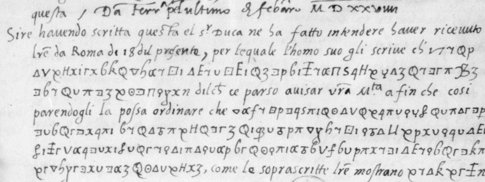

At a glanceKnown key applied · partial (64% of the cipher)
- The letters
- Three letters of February 1529 from François I’s agents Gaspare Sormano and Joachim de Vaulx at Ferrara (nos. 63, 65, 66), two of them one despatch written twice. They report Alfonso d’Este’s answer to the offer of the French army’s captaincy and the kingdom of Naples.
- Where
- BnF français 3096 nos. 63, 65 and 66, via Gallica; the three carry no contemporary decipherment.
- The cipher
- A homophonic substitution of about forty geometric signs, with a null and a code sign for the duke.
- How it was read
- George Lasry’s 2023 key, built from the two glossed siblings in the volume, was applied to the 8,657 transcribed cipher glyphs (the segmentation cut about 18,000 boxes, which include clear-hand fragments); the null, the code sign and some letter forms were added to it.
- What it says
- The duke risolutamente concluse per cosa dil mondo non voler per sé alcunamente accettare il regno; the agents judge his difficulties pretexts and fall back on his son Ercole and on Marshal Trivulzio.
- Credit
- The key is George Lasry’s, published on Tomokiyo’s cryptiana.
- Still open
- Nos. 65 and 66 are decrypted end to end; in no. 63 the long runs on ff. 115v–116r are decrypted only in patches.
01 The documents
BnF fr. 3096 is a volume of original letters to François I and Montmorency of 1528–29. Nos. 62 to 67 are the Ferrara file: Sormano’s letters of March 1529 (no. 62, f. 113) and his doppio (no. 67, f. 124) carry a decipherment written between the lines by a contemporary hand; nos. 63 (ff. 115–116), 65 (ff. 119–120) and 66 (ff. 121–122) do not. Tomokiyo’s cryptiana page prints Lasry’s key for the glossed pair and lists the other three as having no contemporary decipherment (no interlinear gloss or nearby deciphered copy). Gallica has the volume at full resolution (btv1b9060015d, views 117–127), 8,660 pixels across a two-page spread, which is about 44 pixels per sign.
What this page adds. The key is Lasry’s, and it serves the glossed and the unglossed letters of fr. 3096 alike; applying a volume’s key to its other letters is standard procedure. The same cipher is also used in BnF fr. 3045 f. 28 and fr. 3034 f. 154 (Lasry, personal communication, 21 September 2026); those leaves are not transcribed here. The contribution is the transcription of the cipher (8,657 glyphs among about 18,000 segmented boxes) and its decryption, and the null, the code sign and the letter forms that the transcription added to the key.

The three letters are one negotiation. No. 65 and no. 66 both open Zobia passata Io Joachin gionsi qua, both subscribe Da Ferrara alli XXIII febraro 1529, and no. 63 opens Il xxIII del presente per nostre duplicate lettere a vostra Maestà al lungo scrivessimo ciò che havevamo negociato con questo Signor Duca. So 65 and 66 are the duplicate pair sent on the 23rd and 63 is the follow-up. No. 63 breaks off mid-sentence at the foot of f. 116v (difficilmente crederemo …), and f. 117 is a different paper in another hand, wholly unciphered. Its last sheet is f. 123, bound after the duplicate: numbered “3” at the foot where ff. 115 and 116 carry “1” and “2”, it continues the broken sentence, ends with the signatures “Sormano, Joachin” and is dated Da Ferr[ara] p[en]ultimo de Febraro M D XXVIIII, the 27th (February had 28 days that year), not the catalogue’s 28th. Its verso carries the address docket. Arya Sanketbhai Patel found this in a separate attempt on the same letters (September 2026), which also showed that no. 64, filed with them, has no cipher at all.
Both agents write. The narrative voice moves between Io Joachin and Io Sormano in the same letter, and the passages each man puts in cipher are those about his own audiences. “Joachim de Vaulx” is the Genoese Gian Gioacchino de Passano, seigneur de Vaux, whom the French called Jean Joachim: François I writes to Jean du Bellay of “Monsr de Vaulx, Jean Joaquin”, David Potter’s inventory sends Passano to Ferrara “d’où il écrit le 23 février (BnF, fr. 3096, fo. 119-121)”, and Molini prints a Venice letter in which the writers mention letters “da Ferrara per il Sig. Gaspar Sormano et per me Ioachin” (identification by Patel).
02 The cipher, and what the published key lacks
One continuous alphabet of geometric signs written on the line with the clear Italian, no word breaks, cipher and clear alternating mid-sentence. Common letters have three or four homophones: a V υ п 3, e ϰ k Γ 7, i Y ⊙ ρ 4, o Ц 1 ƌ, u/v T α γ H, s Ŧ ⊐; single signs for the rest, Δ c, ▽ q, π n, Q r, x t, 6 p, S g, E h, ϙ l, ꝑ m; and two doubled letters, ⊡ ll and ≠ cc. That is Lasry’s table, and it is right: the first glossed run on f. 113r, ꜿ f T π Δ V 6 ρ x υ π Γ 1 ⊐ α 4 Δ 7 Q ƌ Δ E ϰ ⊐, decrypts to de vn capitaneo suicero che s[i] under the gloss d’un capitaneo suizari ch’si, symbol for symbol.

Four features of the leaves are not in the table, and each causes decryption errors until it is recognised:
- A null. A tall sign with a large loop and a long descender curling left (ɧ) occurs in all three letters and twice in the second glossed run of no. 62, and carries no letter. H 1 Ǝ x ɧ Q п is vostra; Δ E ɧ k is che; Δ ɧ 1 π ſ ʈ Q x ʒ is conforto. The old note “no nulls observed” is struck.
- A code sign. The large double circle ◎ is a separate sign from the i sign ⊙. It stands for duca everywhere: con questo ◎, fusimo col deto ◎, andai dal deto ◎, circa le cose dil regno ◎ rispondesse. It often falls where the clear hand resumes, which is why it looks like a terminator at first.
- The fourth e is a crossbarred long-s. It looks like an f and is the commonest letter form on the page; f proper is the double loop ſſ (offerta, sufficientissime). Taken as f it corrupts one letter in twelve.
- ꝓ, the p with a curled tail, is d (desiderio, dubitai, dal deto), not an i homophone; and the open C-shaped boxes that the automatic segmentation produced by the hundred are the left half of the r sign Q cut at its tail, not a sign.
03 The duplicate pair as mutual cribs
No. 66 is not a copy of no. 65. The two were drafted independently from the same notes, and they encipher different stretches. Where no. 65 puts a sentence in cipher, no. 66 very often has it in the clear hand, and the reverse:
| no. 65, f. 119r (cipher, read here) | no. 66, f. 121r (clear on the leaf) |
|---|---|
| maiestà. fata la reuerentia a madama Rainea et al signor don Hercole | fatta che hebbimo la reuerentia a Madama Rainea et al s[ignor] Don Hercole |
| suadesimo, confortassimo et instantemente esortasimo et pregasimo | suadessemo, confortassemo et instantementi essortassemo et pregassemo |
| nel modo et condicioni in la deta instrittion contenune [sic] | nel modo et condition in la ditta instruttion cõtenuti |
| ringratiandola della cosi grande et honorata offerta che gli era piaciuto fargli | ringratiandola della cosi grande et honorata offerta che gli era piaciuto fargli |
The right column was transcribed from the leaf before the left was decrypted, and neither was used to produce the other. It is an independent check on the key and on the glyph transcription, and it settles most of what one copy leaves doubtful. It also means that any future reader with the two leaves side by side can recover most of the pair without a key at all.
04 Method: transcribing eighteen thousand signs
Ten page sides at 40–60 signs a line and 35 lines a side is too much to transcribe glyph by glyph from a screen at the resolution Gallica serves, and an earlier pass had stalled at a few lines. The route that worked treats the leaf as a character-recognition problem and leaves the final transcription to the eye:
- Segmentation. Line bands from the row-ink profile of each side (337 lines, one physical line once split, none missed), then column-ink valleys inside each band, with runs wider than one sign cut at their thinnest points. 18,273 boxes, each cropped to a fixed 100-pixel height about the line’s x-height centre so that ascenders and descenders keep their place.
- Clustering. Per-line Otsu threshold, blur, 16×22 raster plus width and ink, PCA to 70 dimensions, k-means with 700 centres. Cluster montages ordered by centroid similarity were labelled by eye, letter or “clear hand”, 212 of them automatically from a coarser 340-centre pass, the rest by hand: two sittings of about forty montages.
- Classification. A k-nearest-neighbour classifier on the labelled glyphs (raster plus gradient-orientation histograms) reassigns every box, including the ones in mixed clusters; five-fold cross-validation on the labelled set gives 90 % letter accuracy, most of the remainder being cipher signs against fragments of the clear cursive rather than sign against sign. A five-glyph majority window then marks each line into cipher and clear runs.
- Review. For every line a sheet: the magnified strip in two segments, and below it each segmented box with its index and the classifier’s letter. 170 sheets, read in order with the Italian in mind, correcting the letter where the shape or the word required. Every decryption on this page comes from that step; none rests on the classifier alone.

The pipeline’s value is in the sheets, not in the decoded string: the classifier’s own line for f. 119r line 4 is acioc*econclvsmns*facesc*so*ondoili…, readable only because one already knows what it should say. Where the segmentation merges two signs or the hand writes one over a descender, the sheet shows it and the eye fixes it; where the signs run for a whole side without a clear word to anchor them, as on no. 63 ff. 115v–116r, the errors compound and the decryption thins to patches.
05 Decipherment: no. 65, 23 February 1529
Clear text roman, cipher in brackets, spelling of the leaf kept; (?) a word decrypted from doubtful signs; {…} a ciphered stretch not yet decrypted; ◎ the duke
Zobia passata Io Gian Joachino gionsi qua et dritto me ne veni al logiamento del Ambassator messer Gaspar Sormano, nel quale mi truovo, et a lui comunicata l’intention et comission di vostra Maestà et mostratagli l’instruttion et mandato di quella, et tra nui al lungo divisato et preso ordine dil modo che tenir si dovea [con questo ◎ acioché conclusion si facesse secondo il desiderio di vostra Maestà. Fatta la reverentia a Madama Rainea et al signor don Hercole fusimo col detto ◎], et presentato le lettere di vostra Maestà di credenza con quelle conveniente parole che ci parve convenire, esponessimo la nostra credenza et in nome di vostra Maestà [suadesimo, confortassimo et instantemente esortasimo et pregasimo sua Signoria voler accettare quello che lei, come suo buon et affectionato figliolo, ferisse(?) et deliberasse: far l’impresa di Napoli nel modo et condicioni in la detta instruttion contenute]; et qui con molte efficacissime ragion al lungo rimostrassimo [il stabilimento de sua Signoria, suo stato et posterità, l’honor et l’utile che l’une … riportare, et la satisfaction di vostra Maestà, et finalmente il bene, et con gran gloria di sua Signoria, la finale liberatione et quiete de l’Italia]; né gli fu taciuta la grande buon’opera che in beneficio della [sua persona, stato, casa et successione vostra Maestà haveva fatto … et la quasi ferma speranza che lei riteneva in tutto ridure sua Santità … accordi et condicion che … si dicevano et sua Excellentia poteva desiderar], et le qual tutte cose, volendo lei, al lungo gli furon narrate.
Sire, benché in quello ragionamento, che fu assai lungo, [circa le cose dil regno ◎ rispondesse di sorte] che dall’hora haressimo possuto scriver quello che hora se dirà, nientedimanco concludendo lui che la cosa [per ◎ … grande ma sua … ricercava tempo per meglio pensarvi, presimo aspettar la sua final risposta, et in sto mezzo fussimo di novo con signor don Hercole et fattogli intender che hora era il tempo di operare in servicio di vostra Maestà et che la sua casa … stato ni toccava tanto … {five lines on Ercole’s own interest, read in patches}] … [avisassemo che io Sormano solo andasse, sì come andai, dal detto ◎ per rimostrargli … dì seguente dimandati fusimo da sua Signoria ◎ … et dipoi molte ragioni che a noi parsero sufficientissime, … solo per rimoverlo da ogni per lei preallegato sospetto, … ma etiam per disponerla a l’accettar di … bon animo quanto per vostra Maestà se gli offeriva]: finalmente, ringratiandola della [così grande et honorata offerta che gli era piaciuto fargli, risolutamente concluse per cosa dil mondo non voler per sé alcunamente accettare il regno et manco far l’impresa a suo nome]; et il parlar suo fu di sorte che [io Sormano mi parvi quasi chiarito di quello che io sempre dubitai, cioè che sua Excellentia, anchora che havesse dato orecchie et risposto] nel modo che io scrissi a vostra Maestà, veramente non havesse [animo d’intendere al capitaneato, del qual già molti giorni haveva ricercato]. Ben disse non solo contentarse ma con ogni instanza pregar vostra Maestà che la volesse [trattar tra lei et lei l’apontamento et accordo, circa el qual disse accettar quanto vostra Maestà facesse, persuadendosi che da quella non serà astretta far se non cosa conveniente et ragionevole].
Sire, per il gran desiderio che noi habbiamo che [questo signor Duca satisfacesse alla espettation de vostra Maestà], et in questo non volendo noi pretermetter alcun’opera et officio né lassar alcuna cosa intentata, non ostante [questa sua detta risposta, da capo fossimo col prefato signor don Hercole, veramente desideroso far servicio a vostra Maestà, … rimostrandogli che tal risposta poco concedeva(?) in alcun suo profitto; del che et lui con noi dolendosi della qualità et risposta del padre, si mostrò poco satisfatto; lo instassimo esser di novo con sua Excellentia, sperando che la non volesse perdere questa che dal tempo et da la liberalità di vostra Maestà se gli offeriva così bella occasion, come qual altra offerirse gli potesse … il suo stato … con suo poco et picolo pericolo … la sua casa et sua successione … Italia, et per satisfar a vostra Maestà] … [per conclusione si confirmò in la sopra scritta fatta risposta, et così mal satisfatto ritirandome … signor don Hercole, che con dir mi come el signor Duca in alcun modo intendere non … per sé, et quanto al capitaneato, non ostante ciò che nel sopra scritto primo ragionamento et poi era stato detto et … risposto, disse che sua Excellentia persisteva in la … forma et modo della risposta a questi dì data a me Sormano … così poco … risoluto et poco chiaro come la … fu data, toccando … accordo … componere le cose sue col …].
Sire, dalli soprascritti ragionamenti havuti con questo signor Duca pare di poter concluder che [non si possa far … fondamento che in effetto el … voler intrar o accettar el capitaneato, sul quale … provisione, circonstance et sue dependentie dal canto di sua Excellentia se … le difficultà, et a nostro giudicio … la cosa insieme con le sue provision … dependentie così difficile che paia … di difficultà, et non la volontà sia … quel che non lo facino accettar … questa nostra per aventura vana opinion] a vostra Maestà non c’è parso tacere. Io Joachin aspettarò qua il signor Marechial Triulzo, et siamo d’openione che sua Signoria, [dal prefato signor Duca molto stimata, a beneficio di questa cosa con sua Excellentia s’adoperi], il che per ben di questo negocio et servicio di vostra Maestà siamo certi farà ben volentieri. Da Ferrara alli XXIII febraro MDXXVIIII.
English
Last Thursday I, Jean Joachim, arrived here and went straight to the lodging of the ambassador messer Gaspare Sormano, where I am staying; I gave him your Majesty’s intention and commission and showed him your instruction and mandate, and having talked it over at length we settled how to proceed [with this Duke so that a conclusion might be reached as your Majesty wishes. Having paid our respects to Madame Renée and to Don Ercole we went to the Duke], presented your Majesty’s letters of credence with such fitting words as seemed right, set out our credence and in your Majesty’s name [urged, encouraged and most insistently exhorted and begged his Lordship to accept what he, as your good and affectionate son, should resolve upon: to make the enterprise of Naples in the manner and on the conditions contained in the instruction]. We showed him at length [the securing of his Lordship, his state and his posterity, the honour and the profit that would follow, your Majesty’s satisfaction, and finally, with great glory to his Lordship, the final liberation and quiet of Italy]; nor was he left ignorant of the great good that your Majesty had done [for his person, state, house and succession … and the nearly firm hope you held of bringing his Holiness wholly round … to terms and conditions that … his Excellency could desire]; all of which, since he wished it, was told him at length.
Sire, although in that conversation, which was very long, [on the matters of the kingdom the Duke answered in such a way] that we could have written then what will now be said, still, he concluding that so [great] a matter needed time for reflection, [we resolved to await his final answer, and meanwhile went again to Don Ercole and let him know that now was the time to act in your Majesty’s service, and that his house … and his state were so much concerned …]. [We agreed that I, Sormano, should go alone, as I did, to the Duke, to show him … The next day we were summoned by his Lordship the Duke … and after many reasons which seemed to us more than sufficient, … not only to remove every suspicion he alleged, … but also to dispose him to accept with good will what your Majesty offered him]: in the end, thanking you for [so great and honourable an offer, he resolutely concluded that for nothing in the world would he in any way accept the kingdom for himself, nor make the enterprise in his own name]; and his manner of speaking was such that [I, Sormano, thought myself almost certain of what I had always doubted, namely that his Excellency, though he had lent an ear and answered] as I wrote to your Majesty, never truly [meant to take up the captaincy, which he had been asked for many days before]. He did say that he would not only be content but would beg your Majesty with every insistence [to treat between yourself and him the appointment and accord, and said he would accept whatever your Majesty did, being persuaded that you would bind him to nothing but what is fitting and reasonable].
Sire, out of our great wish that [this Duke should satisfy your Majesty’s expectation], leaving nothing untried, notwithstanding [this answer we went back to Don Ercole, who truly wishes to serve your Majesty …, showing him how little such an answer served his own profit; and he, grieving with us over the nature of his father’s answer, showed himself ill satisfied; we pressed him to go again to his Excellency, hoping he would not let slip so fair an occasion as your Majesty’s liberality and the times offered him … his state … at small and little risk … his house and his succession … Italy, and to satisfy your Majesty]. [In conclusion the Duke confirmed his earlier answer, and I, Sormano, withdrew ill satisfied … Don Ercole telling me that the Duke would in no way take it on for himself, and that as to the captaincy, whatever had been said and answered before, his Excellency held to the form of the reply given me some days ago, … as little resolved and as little clear as when it was given, touching on … an accord … to settle his affairs with the Pope …].
Sire, from all these conversations with the Duke it seems we may conclude that [no reliance can be placed on his in fact meaning to enter or accept the captaincy; on which, as to the provisions, circumstances and dependencies, on his Excellency’s side the difficulties … and in our judgement … the thing, with all its provisions and dependencies, is so difficult that it seems … it is difficulty and not want of will … that keeps him from accepting; this our perhaps vain opinion] we thought it right not to hide from your Majesty. I, Joachim, shall wait here for the marshal Trivulzio, and we are of opinion that his Lordship, [much esteemed by the Duke, will exert himself with his Excellency for this business], which for the good of the affair and your Majesty’s service we are sure he will do very willingly. From Ferrara, 23 February 1529.
Madama Rainea is Renée de France, Louis XII’s daughter, married to Ercole d’Este in 1528; questo signor Duca is Alfonso I d’Este; il Marechial Triulzo is Teodoro Trivulzio, marshal of France and governor of Genoa. The capitaneato is the command of the French army in the kingdom of Naples after Lautrec’s death before the city in August 1528, when the King was looking for an Italian prince to carry the war; the crown of Naples was the bait. Alfonso’s refusal here, dressed in the want of provisions, is the first sign of the turn that ended with his abandonment of the French alliance and his accommodation with the Emperor at the Peace of Cambrai (August 1529) and the settlement of 1530. (This background, the identities of Renée, Alfonso and Trivulzio, and the dates in this paragraph are not from the sources and were not checked here.)
06 Nos. 66 and 63
No. 66 tells the same story in the same order, with the clear and ciphered stretches swapped as described above, and a fuller close: Non mancaremo continuamente sollicitar sua Excellentia, et se da quella altro potremo haver se dira. The reading audit of 22 October 2026 found its own cipher stretches to be letter strings that mostly made no words, and set it to decoded, not read. On 23 October every cipher stretch of ff. 121r–122r was re-read sign by sign on the Gallica master (the old f. 121r strings were misreadings, and f. 121v lines 21–43 and f. 122r had never been transcribed), using no. 65 only as a check. Three values hold across the letter: the crossbarred long-s is a null (about twenty places), a looped b-shaped sign is rr (ridure, Ferara, l’errore) and a looped Ʒ is z; a code sign read Papa (four contexts) and another [?Imperatore] (one) rest on context and are flagged. No. 66 now reads (no66_reading.md, English no66_en.md); nothing in it changes the account.
No. 63 is the sequel and the hardest of the three: four sides, three of them almost solid cipher, no sibling. The decrypted part is enough for the sense. The duke had given
“poco chiara [?et] risoluta risposta” on the captaincy and repeats it; he says he cannot see that the King and his confederates are making the provisions the enterprise needs,
… esercito in campagna …, money for Swiss, Spaniards and Genoese, and that all should be furnished before he commits, et tanto più hora, che già siamo — così disse — nel
buon tempo. Two things he asks the King to remember, one about the Naples enterprise itself and one about the command. Dal canto suo disse non dover mancare; the agents say they
have omitted nothing in their power, judge from the duke’s nature that the matter debba esser non poco difficile, and put their hope in Trivulzio: Sire, con tutto che per le
ragion dette siamo in … poca speranza che questo signor duca … intendere … capitaneato, pur in questa causa non volendo noi pretermetter alcuna natura d’opera et d’ufficio, se’l
signor Marechial Triulzo andando a Vinetia passarà per qua … pensiamo operar che sua Signoria …; et in sto mezzo per tri o quatro giorni anchora Io Joachin qui l’espettarò.
Its second sheet stops at the foot of f. 116v in the middle of a clause, which continues on f. 123r (next section). The decipherment of ff. 115–116, with the undecrypted runs marked, is targets/sormano/n63_reading.md. Read only in patches, ff. 115–116 are decoded, not read. On 23 October 2026 f. 115r lines 1–27 were re-read sign by sign with the values found in no. 66 (no63_reading.md, partial); the rest of the two leaves has not yet been reached, and the image is legible enough to do it.
07 No. 63, third sheet: f. 123r, 27 February 1529
The sheet that ends no. 63 carries seven cipher runs, about 389 signs, and Lasry’s key with the corrections above decrypts all but three of them. The first run finishes the sentence broken off on f. 116v; the postscript is news from Rome. Clear text roman, decrypted text in italics, as in section 05; {s} a letter read from a sign not in the table, 《…》 signs that give no word.
[… difficilmente crederemo] a l’impresa de Napoli, ne anche al capitaneato, mediante il quale quando l’havese accetato o accetase per aventura si sarebbe intertenuta, o forsi in qualche modo conduta la pratica de la, noi dubitiamo, anzi teniamo che quello disegno che di sua santità sera fato et che vostra Maestà sa rima{s}a in tuto deserto, pur s’andera vedendo et intertenendo la cosa tanto viva quanto sarà possibile tenerla … Da Ferrara penultimo de febraro MDXXVIIII.
Sire, havendo scritta questa el signor Duca ne ha fatto intendere haver ricevuto lettere da Roma di 18 del presente, per le quale l’homo suo gli scrive che 《a e i》 ricaduto et per quello che allhora si poseva giudicare sensa speransa di salute, dil che ce parso avisar vostra Maestà a fin che, così parendogli, la possa ordinare che quelli signori cardinali francesi s’aprestino per condurse a Roma o in quello loco d’Italia che fose avisato fare el conclavi per il novo papa, inteso che ’l presente de questa sua ricaduta, come le soprascritte lettere mostrano, decedese.
The duke’s man in Rome had written on 18 February that the Pope had relapsed and was thought past saving, and the agents ask the King to have the French cardinals ready to travel to Rome, or wherever in Italy the conclave might be held. Clement VII had fallen gravely ill in January 1529 and recovered (from NOTES.md: 'Clement VII's illness of early 1529'; the recovery and the January date are not from a cited source and were not checked here). Who relapsed is not in the three signs before ricaduto, which give no word as written; the subject comes from novo papa and sua ricaduta in the next run. The clear text of the sheet is an eye reading, not yet checked word by word.

One sign behaves differently here: the crossbarred long-s, which the f. 113r gloss makes a fourth e, is a null three times on this sheet (q(f)uello, qu(f)elli, pa(f)pa). The decryption drops it; the key table is not changed until the sign has been compared on the two leaves. The sign-by-sign reading is targets/sormano/n63_f123r_reading.md.
08 The first attempt from the microfilm
Before the key was found, Arya Sanketbhai Patel worked on the same three letters from the Gallica images (September 2026; his notes and scripts are in targets/sormano/arya/). From the margin decipherment of no. 67 and the gloss on no. 62 he fixed 22 values, thirteen of them twice over, and checked them on a sentence that no. 66 has in clear and no. 65 in cipher. Against Lasry’s table, 20 of the 22 are right; the two wrong ones (the figure 4 is i, not e; the figure 3 is a, not o) were what had blocked him. His eight attempts to finish the key without it, from mask overlap and template matching to a language-model decoder, all failed on homophone forms that the microfilm does not separate; the language-model output was fluent Italian and wholly invented, a warning for any decipherment of these leaves offered without its sign-level evidence.


He also found two further leads. On f. 116v the words de Venetiani are written above a two-sign group, a third contemporary gloss that shows the cipher had a nomenclator beyond the duke’s sign. And Molini’s Documenti di storia italiana prints, with its interlinear decipherment in italics, Sormano’s letter from Ferrara of 13 April 1529 in the same cipher (BnF fr. 2974 f. 94, on microfiche only); Molini does not print nos. 63, 65 or 66.
09 What remains uncertain
- In no. 65 about a dozen words are marked (?) or left in braces: the five lines on Ercole’s interest at the foot of f. 119r, three lines at the foot of f. 119v, and the run on f. 120r where the duke’s answer is repeated. All are places where the segmentation merged or split signs in a dense run; the glyph strings are in the transcription. No. 66’s re-reading shows these signs are legible (no. 65’s {B} is the rr sign), so they can be re-read the same way.
- No. 63 ff. 115–116: decoded, not read; roughly half the cipher lines are decrypted only in patches. Lines 1–27 of f. 115r were re-read sign by sign on 23 October 2026; the rest still needs it. The Gallica master is legible at 1–1.8×, and no. 66’s values read it.
- The b sign (τ) was not securely identified on any leaf; the few b’s in the text fall in words restored from context (buon, bene, bella).
- The dates: 23 February 1529 is on the leaves for 65 and 66; no. 63 is dated on its third sheet, f. 123r, penultimo February, the 27th.
- f. 123r: three signs before ricaduto give no word; rima{s}a rests on a B-shaped sign not in the table; sera fato could be sera dato if the tall looped sign is d; and the crossbarred long-s is a null there, as in no. 66 (about twenty places), against the e fixed on f. 113r, which needs a recheck.
Full texts
The transcription and the decryption of every document on this page, so that the reading can be used and checked. Short files are shown here; all are in the repository.
No. 65, BnF fr. 3096 ff. 119-120, Sormano and de Vaulx (Passano) to François I, Ferrara, 23 Feb 1529
The French envoys at Ferrara to François I on their audience with Alfonso I d'Este, duke of Ferrara, after the reverence to Madama Renée and Don Ercole: the duke refuses to take the kingdom of Naples for himself or the captaincy of the French army, offers only to accept whatever accord the King negotiates for him with the Pope, and pleads the want of provisions; the agents judge his difficulties pretexts and fall back on Ercole and on Trivulzio. arya/ct/read_no65_duke_answer.md is Patel's separate reading of the Duke's answer (f. 119v) with Lasry's key, controlled on the clear twin no. 66.
Transcription
# No. 65 — Sormano and de Vaulx to François I, Ferrara, 23 Feb 1529 (fr. 3096 ff. 119r–120r)
Working transcription, line by line. Clear text in plain type; cipher runs are
given as the decoded letters in *italics* with glyph notes in {braces} where a
reading is uncertain; ◎ marks the large double-circle sign that closes cipher
runs; (ɦ) a tall h-like stroke that behaves as a null; · a fragment/noise box.
Method: automatic glyph segmentation + k-NN classification (see build notes),
every line checked by eye against the line strip.
## f. 119r (Gallica view 123, right page)
L00 Iobia passata Io Gian Ioachino gionsi qua et dritto me ne veni al logiamento del Am-
L01 bassator m. Gaspar Sormano, nel quale mi truovo, et a lui comunicata l'intention
L02 et comission di vra Mtà et mostratagli l'instruttion et mandato di quella et tra nui
L03 al lungo divisato et preso ordine dil modo ch' tenir si dovea *c{ff}o(ɦ)n questo* ◎
L04 *acioche conclusion si facesse secondo il desiderio di vost(ɦ)ra*
L05 *Maiestà. fata la reverentia a Madama Rainea et al signor don*
L06 *Hercole fusimo col deto* ◎ et presentato le lre di vra Mtà di credenza
L07 con quelle conveniente parole ch ci parve convenire esponessimo la nostra cre-
L08 (short band: descenders only)
L09 denza et in nome di vra Mtà *s(ɦ)vadesimo c(ɦ)on fort{a}s··mo et instan-*
L10 *temente esortasimo et pregasimo sua signoria voler acce-*
L11 *tare quello che lei come suo buon et affectionato figliolo feri-*
L12 *s{ϰ}e et delibera(ɦ){ʈr}sse far l'impresa di Napoli nel modo et co[f]n*
L13 *dicioni in la deta instrittion contenune [sic, =contenute]* et qui con molte effi-
L14 cacissime ragion al lungo rimostrassimo *[f] il stabilimento de sua signo-*
L15 *ria s{H⊙}stato et {ʈ}osterit{α} l'honor et l'utile che l'une*
L16 *(ɦ)ri{ʈ}ortare o e la sa{n}tisfaction di vost(ɦ)ra maiestà*
L17 *et finalmente il {ƌ}ene et con gran gloria di sua signoria la*
L18 *finale liberatione et quiete de l'Italia* ne gli fu taciuta la
L19 grande buon opera che in beneficio della *(ɦ)sua {ʈ}ersona stato c{Ц}sa n et*
L20 *successione vost(ɦ)ra maiestà have{γ}v {ʈ}ato con {⌐}e et la*
L21 *quasi ferma speranza che le{i} ritene{v} a in tuto ridu{B}e sua*
L22 *santità que{n} cc irdi et con dicion ch(ɦ)[f]nse dic{TT}vno et sua*
L23 *excel{π}entia (H) posiva de esperar·ra ar{n}* et le qual tutte cose volendo lei al
L24 lungo gli furon narrate
L25 dire, benche in quello ragionamento ch fu assai lungo *ci(ɦ)rca le cose dil re-*
L26 *gno* ◎ *rispondese di sorte* che dal hora haressimo possuto scriver
L27 quello ch hora se dira, nientedimanco concludendo lui che la cosa *{ʈ}e{r}* ◎ *{⊙ρH}*
L28 *grande ma sua {·} ricercava tempo per meglio pensarvi*
L29 *presimo aspetar la s{H}a final risposta et in sto me{BB}i*
L30 *(ff)isimo di novo c{Ц}{?}n signor do(ɦ)n Hercole et fatogli i{⊙}tten-*
L31 *der{e} ch(ɦ)e hora era il tempo di operare in servicio di*
L32 *vost(ɦ)ra maiestà et che la sua cassa{H}(·) et sua (·) et sua(·) suarti-*
L33 *culo(·) et (·) lipi et stato ni tocava tanto (·) tanto no(ɦ)che (·)*
L34 *(ff)aciovano (·) cha (·) lei ha(ɦ)vesse (·) et {ɦ} esso ma (·) et (·)*
L35 *tuto quel ch (·) ha{ʈ}(·) et pero (·) che (·) presegli(·) ognor vo{n}(·)*
L36 *dosi (·) gli esser {?}sc(·) (·) cosi con sua (·) ha(ɦ) (·) esser (·) qua*
## f. 119v (Gallica view 124, left page)
Note: ◎ (large double circle) is a nomenclator sign; from context ("con questo ◎",
"fusimo col deto ◎", "andai dal deto ◎", "cose dil regno ◎ rispondese") = DUCA (Alfonso d'Este).
ɦ (tall h-stroke) and an occasional ff inside a word are nulls.
L01 *avisasemo ch io Sorman{l}o solo andase si come andai dal deto* ◎ *per*
L02 *rimostrargli come a d{oo}re a{o}le servitore le {B}ore che sua excelentia*
L03 *far n{v}on quando l'an(ɦ)o f{n}a cc e{?}ta s{n} cio c(ɦ)he si dice*
L04 *{ol} di sequente dimandati fusimo da sua signo* ◎ *{oa} et dipoi molte ragio-*
L05 *n{o} e che a noi parsero sufficientisima e{n} in solo per (ffɦ) rimoverlo*
L06 *da ogni per lei per alegato sospeto o si de lo e come te{o?} naturalmen-*
L07 *{ci}me diceva et di caso inimici o ma etiam per disp{nn}r{i}a a l'a cc etar*
L08 *di v{ɦH}i in animo quanto per vostra maiestà se gli offeriva* finalmente
L09 ringratiandola della *cosi grande et honorata offerta ch(ɦff)e gli era pia-*
L10 *civto fargli risolvtamente conclvse per cosa dil mondo n{c}on voler(ia)*
L11 *per se alcunamente accetare il regn{a}{nt} m{a}anco f{v}r l{l}m(?)resa a svo*
L12 *nome* et il parlar suo fu di sorte che *p io Sormano mi parvi quasi chiari(to)*
L13 *di quello che io sempre dovitai [=dubitai] cioe che sva excellentia anchora che*
L14 *havesse dato orechie et risp{i}so* nel modo ch Io scrissi a vra Mtà veramente
L15 non havesse *animo d'intender{n} al capitanato del qual gia molti gior-*
L16 *ni haveva ricercato* Ben disse non solo contentarse ma con ogni instanza
L17 pregar vra Mtà che la volesse *tratar tra l{oe} et lei l'ap{i}ntamento et*
L18 *accordo circa el qual dise accetar quanto vostra maiestà face{i}s-*
L19 *persvadendosi che da quella non serà astr{i}ti far se non cosa con-*
Glyph-form note (from these lines): ꝓ (p with curled tail) = d; ꝺ (∂-form) = f
("offerta", "sufficientissime"); τ vs T: T = v ("haveva"); ⊡ = ll ("quello",
"excellentia"); ≠ = cc ("accordo", "accettar").
L20 *veniente et ragionevole*
L21 Sire per il gran desiderio che noi habbiamo che *questo signor duca satisface(sse)*
L22 *alla espetation de vostra maiestà* et in questo non volendo noi preter-
L23 metter alcun opera et officio ne lassar alcuna cosa intentata non ostante *{f}q{a}s{·} [=questa?] sua*
L24 *deta risposta da capo fosimo col prefato signor don Hercole*
L25 *veramente desideroso far servicio a vostra maiestà et s{v}l{v}n{o}so*
L26 *non v{ao}n{a} contente{m}a{a} rimostrandogli che tal risposta poco co{c}e{x}*
L27 *va in alcun s{x}uo profito del che et lui con noi dolendosi della qua-*
L28 *lità et risposta del patre si mostro poco satisfato {o}in sta s{ii}*
L29 *e{s}er di novo con sua excellentia sperando che la non volese ques-*
L30 *to che dal tempo et da la liberalità di vostra maiestà se gli*
L31 *offeriva c{d}si bella occasion come qual a{l}tra offerirse gli potesse*
L32 *si per sta{·}i li re(?) il suo stato e saltar con suo p{·}co et picolo per* [uncertain]
L33 *ci l'oe t{m}pnor spesa la sua casa e t sua c{es}lone [=successione?] ci me pe s r li{·}e ra* [uncertain]
L34 *italia et per satisfar a vostra maiestà* oltra di questo avisassi
L35 che pi *o Sormano vna altra vilta mi tr{i}i{v}se ci me m{p}tria vp si loc(?) in p(?)* [uncertain]
L36 ◎ *per av{·}i r tirio di nia o del ciò che a{·}end{ff}icio di questi ne s{g}o ci po* [uncertain]
L37 *con a{e}nir me par e a v{h}ir h(ɦ)aven edi se ci v{ll}in s o de{·}a t a t o p l c a s i* [uncertain]
## f. 120r (Gallica view 124, right page)
L00 (blank band)
L01 *sa assis{n}i ria per conclusione si confirmo {o}n la sopra scrit(ta)*
L02 *fata risposta et c{i}si m{a}l satisf{a}to ritirandome dal ar{p}o cu-*
L03 *a persona{p}a{·}ia i e si so s{n}ir don Hercole che con dir mi come*
L04 *o el signor duca in alcun m{i}do intendre non ai le a{a}alr{?}gni*
L05 *per se et quanto al capitaneato non ostante ciò che ne l sopra*
L06 *s{c}rito primo ragionamento et poi e{r}a stato deto et {ha} risposto*
L07 *dise che sua excellentia persisteva ni in la d{o}{·}rma [=forma] et mido(?)*
L08 *d{·}nella risposta a questi d{·}{·}ata a{·}me Sormano et la e e v a l c i m e* [uncertain]
L09 *se deto io scrissi in quel proprio modo et cosi p{·}co {·} risoluto*
L10 *et poco chiaro come la {··}i fu data tocando mo e{·} faran {?}accor{·}do*
L11 *{i}nt componere le cose sue col p{apa}(?) {····} f(ɦ)a con dir mi quanto di sopra*
L12 Sire da li soprascritti ragionamenti hauuti con questo sr Duca pare di poter
L13 concluder che *non {ffɦ}n s pa da far s r n n d{··}ndamento* [=non si possa far ... fondamento] *che ine{·}f{·}to*
L14 *el de{··}a voler intrar o accettar el c{a}pitaneato sul quale n pro-*
L15 *visio{e}e circonstance et sue dep{·}endn{n}ce d{·}l canti di sua e{·}x-*
L16 *cellentia se a dh ca n{·}tate le di{ff}icultà et a nostro giudicio*
L17 *per {·}rdhren{·}de{·}r n la cosa insieme con le sin p{·}ro{a}isio{n} n t n t* [uncertain]
L18 *dependentie cosi di{ff}icile che pa{ia}c{··}eoe di d{·}lcultà et non la ve-*
L19 *{vo}lunta sia no quell che no l facino a cc{·}eta{·}r ntqa{·}esta nostra*
L20 *per aventura vana opinion* a vra Mtà non ce parso tacere
L21 Io Joachin aspettaro qua il sr Marechial Triulzo et siamo d'openione ch sua s.a
L22 *dal p{·}ati s{·}ne{·}r duca molto stimata a{·}eneficio di questa*
L23 *cosa con sua excellentia sa d'operar{·}i* il che per ben di questo negocio
L24 et servicio di vra Mtà siamo certi fara ben volentieri. Da Ferrara alli
L25 XXIII febrar M D XXVIIII [seal]Transcription: no65.xml
Decryption
# No. 65 — Sormano and de Vaulx to François I, Ferrara, 23 February 1529
BnF fr. 3096 no. 65, ff. 119r–120r (Gallica `btv1b9060015d`, views 123–124).
Headed `Sire`. The twin of no. 66, which is docketed `duplicata`; the two
encipher *different* passages, so each supplies the other's cipher in clear.
Deciphered passages are in *italics*; clear text is roman. `·` is the null
(see `KEY.md`). Line numbers are the working indices of `pages.json` /
`extract.py` and are not a citation — the line-band detector emits f. 119r L8
and L9 for one physical line.
## f. 119r, opening
**L0–3 (clear).** Zobia passata Jo Gian Joachino gionsi qua, et dritto me ne
ueni al logiameto del Ambassator m[esser] Gaspar Sormano, nel quale mi truouo;
et a lui comunicata l'intenhon' et comission' di v[ost]ra M[aes]ta, et
mostratagli l'instruction' et mandato di quella, et tra nui al lungo diuisato
et preso ordine dil modo ch' tenir si douea —
**L3 (cipher).** `Δ f 1 ɧ π · ▽ T Γ Ǝ x ʈ · ◎`
= *con questo ◎* — i.e. **con questo Duca**, `◎` being the nomenclator.
**L4.** `V Δ p 1 Δ E Γ · Δ ʒ π Δ 9 α · Ǝ 4 1 π · Ǝ Y · ʃ υ Δ k Ŧ ϰ · Ǝ Γ Δ 1 π ꝑ 1 · ⊙ 9 ꝑ 7 Ǝ p ꝑ k Q Y ʒ · ꝑ ⊙ · H 1 Ǝ x ɧ Q п`
= *acioche conclusion si facese secondo il desiderio di vostra*
**L5.** `ꝕ 3 Y ϰ Ǝ x V · ʃ υ x ʒ · ϙ п · Q Γ α 7 Q k π x Y V · υ · ꝕ 3 ꝑ 3 ꝕ V · Q υ ⊙ π ϰ 3 · Γ x υ · ϙ Ǝ p S π 1 Q · ꝑ ⊙(?) π`
= *maiesta, fato la reuerentia a madama Rainea et al signor don*
**L6.** `Ɛ k Q Δ ʈ ϙ 7 · ʃ H Ŧ Y ꝕ Ц · Δ ʈ 9 ꝑ ϰ x 1 · ◎`
= *Hercole, fusimo col deto ◎* (= col detto Duca) — then clear: et presentato
le l[ette]re di v[ost]ra M[aes]ta di credenza,
**L7 (clear).** con quelle conueniente parole ch' ci parue conuenire
esponessimo la nostra cre-
**L8/9 (clear).** -denza et in nome di v[ost]ra M[aes]ta —
**L9 (cipher).** `Ǝ ɧ α п ꝑ Γ Ŧ ꝗ ꝕ 1 · Δ ɧ 1 π ʃ ʈ Q x ʒ · Ŧ ꝑ ꝕ Ц 1 x ⊙ π Ǝ x υ п`
= *suadesimo, conforto[ssimo], …instan-*
**L10.** `x k ꝕ ϰ π x Γ · ɣ Ŧ 1 Q x 3 Ŧ ⊙ ꝕ ʈ · k x · 6 Q ϰ S 3 Ŧ Y ꝕ Ц · Ǝ α V · Ǝ p S π 1 Q ᴧ υ …`
= *-temente esortasimo et pregasimo sua signoria*
**L11.** `x υ Q ɣ · ▽ T ϰ ⊡ 1 · Δ E ɧ k · …`
= *…[ac]cetare quello che …*
Beyond L11 the leaf continues with the passage that no. 66 f. 121r L12–13
writes in clear — *nel modo et condition in la ditta instruction cōtenuti*.
**A full line-by-line transcription of all three sides of no. 65 exists in
`n65_transcription.md`**, produced independently and in parallel with this
reading. It goes much further than the lines above and should be read as the
primary transcription; the value of what is here is that it was made
separately and agrees — same text at L4, L5, L6, L9 and L10, and the same two
findings (the null, and `◎` closing runs) reached from different evidence.
Where the two differ, prefer `n65_transcription.md`, which carries the whole
letter; where it marks a patch uncertain, the alignment with no. 66 below is
the way to settle it.
## Continuous reading of the whole letter
From `n65_transcription.md`, checked against no. 66. *Italics* = deciphered;
(?) = a word read from damaged or doubtful glyphs; 《…》 = a ciphered stretch
that resists reading. ◎ = DUCA.
### f. 119r
Zobia passata Io Gian Joachino gionsi qua et dritto me ne veni al logiamento
del Ambassator messer Gaspar Sormano, nel quale mi truovo, et a lui comunicata
l'intention et comission di vostra Maestà et mostratagli l'instruttion et
mandato di quella, et tra nui al lungo divisato et preso ordine dil modo che
tenir si dovea *con questo* ◎ *acioché conclusion si facesse secondo il
desiderio di vostra Maestà. Fatta la reverentia a Madama Rainea et al signor
don Hercole fusimo col detto* ◎, et presentato le lettere di vostra Maestà di
credenza con quelle conveniente parole che ci parve convenire, esponessimo la
nostra credenza et in nome di vostra Maestà *suadesimo, confortassimo et
instantemente esortasimo et pregasimo sua Signoria voler accettare quello che
lei, come suo buon et affectionato figliolo, ferisse(?) et deliberasse: far
l'impresa di Napoli nel modo et condicioni in la detta instruttion contenute*;
et qui con molte efficacissime ragion al lungo rimostrassimo *il stabilimento
de sua Signoria, suo stato et posterità, l'honor et l'utile che l'une …
riportare, et la satisfaction di vostra Maestà, et finalmente il bene, et con
gran gloria di sua Signoria, la finale liberatione et quiete de l'Italia*; né
gli fu taciuta la grande buon'opera che in beneficio della *sua persona, stato,
casa et successione vostra Maestà haveva fatto con … et la quasi ferma
speranza che lei riteneva in tutto ridure sua Santità … accordi et condicion
che … si dicevano et sua Excellentia poteva desiderar* — et le qual tutte
cose, volendo lei, al lungo gli furon narrate.
Sire, benché in quello ragionamento, che fu assai lungo, *circa le cose dil
regno* ◎ *rispondesse di sorte* che dall'hora haressimo possuto scriver quello
che hora se dirà, nientedimanco concludendo lui che la cosa *per* ◎ *…
grande ma sua … ricercava tempo per meglio pensarvi, presimo aspettar la sua
final risposta, et in sto mezzo fussimo di novo con signor don Hercole et
fattogli intender che hora era il tempo di operare in servicio di vostra
Maestà et che la sua casa … et suo … stato ni toccava tanto …* 《f. 119r
L32–36: the run on Ercole's own interest — his house, his person, what he
might hope for — is only partly legible》
### f. 119v
*… avisassemo che io Sormano solo andasse, sì come andai, dal detto* ◎ *per
rimostrargli come a … servitore le … che sua Excellentia far … quando …
ciò che si dice. … dì seguente dimandati fusimo da sua Signoria* ◎ *… et
dipoi molte ragioni che a noi parsero sufficientissime, … solo per rimoverlo
da ogni per lei preallegato sospetto, … come … naturalmente … diceva et
… ma etiam per disponerla a l'accettar di … bon animo quanto per vostra
Maestà se gli offeriva*: finalmente, ringratiandola della *così grande et
honorata offerta che gli era piaciuto fargli, risolutamente concluse per cosa
dil mondo non voler per sé alcunamente accettare il regno et manco far l'impresa
a suo nome*; et il parlar suo fu di sorte che *io Sormano mi parvi quasi
chiarito di quello che io sempre dubitai, cioè che sua Excellentia, anchora che
havesse dato orecchie et risposto* nel modo che io scrissi a vostra Maestà,
veramente non havesse *animo d'intendere al capitaneato, del qual già molti
giorni haveva ricercato.* Ben disse non solo contentarse ma con ogni instanza
pregar vostra Maestà che la volesse *trattar tra lei et lei l'apontamento et
accordo, circa el qual disse accettar quanto vostra Maestà facesse,
persuadendosi che da quella non serà astretta far se non cosa conveniente et
ragionevole*.
Sire, per il gran desiderio che noi habbiamo che *questo signor Duca
satisfacesse alla espettation de vostra Maestà*, et in questo non volendo noi
pretermetter alcun'opera et officio né lassar alcuna cosa intentata, non
ostante *questa sua detta risposta, da capo fossimo col prefato signor don
Hercole, veramente desideroso far servicio a vostra Maestà, et … non …
contento …, rimostrandogli che tal risposta poco concedeva(?) in alcun suo
profitto; del che et lui con noi dolendosi della qualità et risposta del
padre, si mostrò poco satisfatto; lo instassimo esser di novo con sua
Excellentia, sperando che la non volesse perdere questa che dal tempo et da la
liberalità di vostra Maestà se gli offeriva così bella occasion, come qual altra
offerirse gli potesse … il suo stato … con suo poco et picolo pericolo …
la sua casa et sua successione … Italia, et per satisfar a vostra Maestà*;
oltra di questo avisassi che *io Sormano una altra volta mi …* 《…》 ◎ 《…》
### f. 120r
*… per conclusione si confirmò in la sopra scritta fatta risposta, et così
mal satisfatto ritirandome … a persona … signor don Hercole, che con dir mi
come el signor Duca in alcun modo intendere non … per sé, et quanto al
capitaneato, non ostante ciò che nel sopra scritto primo ragionamento et poi
era stato detto et … risposto, disse che sua Excellentia persisteva in la
… forma et modo della risposta a questi dì data a me Sormano …, se detto io
scrissi in quel proprio modo, et così poco … risoluto et poco chiaro come la
… fu data, toccando … faran … accordo … componere le cose sue col …,
con dir mi quanto di sopra.*
Sire, dalli soprascritti ragionamenti havuti con questo signor Duca pare di
poter concluder che *non si possa far … fondamento che in effetto el …
voler intrar o accettar el capitaneato, sul quale … provisione,
circonstance et sue dependentie dal canto di sua Excellentia se … le
difficultà, et a nostro giudicio per … la cosa insieme con le sue provision
… dependentie così difficile che paia … di difficultà, et non la volontà
sia … quel che non lo facino accettar … questa nostra per aventura vana
opinion* a vostra Maestà non c'è parso tacere.
Io Joachin aspettarò qua il signor Marechial Triulzo, et siamo d'openione che
sua Signoria, *dal prefato signor Duca molto stimata, a beneficio di questa
cosa con sua Excellentia s'adoperi*, il che per ben di questo negocio et
servicio di vostra Maestà siamo certi farà ben volentieri. Da Ferrara alli
XXIII febraro MDXXVIIII.
### Summary (English)
1. De Vaulx arrived on Thursday, joined the resident Sormano, and they agreed how
to approach Duke Alfonso so that a conclusion could be reached as the King
wished.
2. After paying their respects to Renée de France and Ercole d'Este they
delivered the King's letters of credence and urged the duke to accept, "as
the King's good and affectionate son", the enterprise of Naples on the terms
of their instruction.
3. They set out the arguments: the security of his house and state, honour and
profit, the King's satisfaction, the liberation and quiet of Italy, and all
the King had done for his person, state, house and succession, including
the hope of reconciling him with the Pope.
4. The duke answered at length but asked for time on so great a matter; the
agents pressed Ercole meanwhile.
5. Sormano then saw the duke alone; after many reasons the duke declared that
for nothing in the world would he accept the kingdom for himself or make the
enterprise in his own name.
6. Sormano says this confirmed his long-standing doubt that the duke ever
meant to accept the captaincy he had been asked for.
7. The duke offered only to accept whatever settlement the King negotiated on
his behalf with the Pope, trusting the King to ask nothing unreasonable.
8. The agents went back to Ercole, who was unhappy with his father's answer and
agreed to press him again — without result: the duke persisted in his
earlier, unclear and unresolved reply.
9. The agents conclude that no reliance can be placed on the duke's accepting
the captaincy; his difficulties are, in their view, pretexts.
10. De Vaulx will await marshal Trivulzio, whom the duke esteems, and hope he
can move him. Ferrara, 23 February 1529.
## Cross-check against no. 66
no. 66 f. 121r L6–7 has in the clear hand *"fatta che hebbimo la reuerentia a
Madama Rainea et al s[ignor] Don Hercole"*, and L10 *"suadessemo confortassemo
et instantementi essortassemo et pregassemo"*. These are the same two sentences
read above out of no. 65's cipher at L5 and L9–10. The decipherment and the
duplicate confirm each other.
## Persons
*Madama Rainea* — Renée de France, duchess of Ferrara. *don Hercole* — Ercole
d'Este. *Gaspar Sormano* — the resident ambassador. *Jo Gian Joachino* —
Joachim de Vaulx, newly arrived with the king's instruction and mandate.Decryption
# No. 65, f. 119v: the Duke's answer, read with Lasry's key
BnF fr. 3096 no. 65 (Sormano and Passano to François I, Ferrara, 23 February 1529), the cipher run that
follows the clear words "finalmente ringratiandola della" and ends where the clear text resumes "et il
parlar suo fu di sorte che".
Read with the key George Lasry published in 2023 (`key_lasry.tsv`, from
cryptiana.web.fc2.com/code/francis.htm, "Sormano's Cipher", table `src/lasry_sormano_key.png`).
Glyph labels are described in `decode_sormano.py`.
## Control: the stretch whose plaintext the twin supplies
No. 66 gives in clear, at this point, "cosi grande et honorata offerta che gli era piaciuto fargli,
risolutamente concluse". Applying the key to no. 65's glyphs there:
glyphs ⊐ ⊙ 9 α x υ ᵷ ɾ π x ɾ Δ ⊙ π Δ 9 H ⊐ ɾ
key s o l v t a m e n t e c o n c l v s e
reading s o l u t a m e n t e c o n c l u s e
i.e. "[ri]solutamente concluse" — the twin's own words, recovered from the cipher. u and v share the
key's V forms, so "conclvse" is *concluse*. This is the control on everything below.
## The answer itself
Continuing through the same run, the glyphs and their values:
6 ɾ Q Δ O ⊐ υ ᴄ ρ 9 ᵷ O π ᴄ O ᴨ O π α ᴆ 9 ᴋ Q
p e r c o s a d i l m o n d o n o n v o l e r
per cosa dil mondo non voler
⊙ ⊐ ɾ υ 9 Δ H π υ ᵷ ɾ π x ɾ V ≠ ɾ x V Q ɾ ⊙ 9 Q ɾ S π Ц
i s e a l c v n a m e n t e a cc e t a r e i l r e g n o
[s]e alcunamente accetare il regno
ᴨ x ᵷ υ π Δ ɪ ᶠ υ Q 9 9 ᵷ
n t m a n c o f a r l l m
ne [ta]manco far l… (uncertain)
So the sentence, with the clear text either side:
> "… finalmente ringratiandola della **cosi grande et honorata offerta che gli era piaciuto fargli,
> risolutamente concluse per cosa dil mondo non voler … se alcunamente accetare il regno, né
> [ta]manco far …** et il parlar suo fu di sorte che [Jo Sormano mi parue quasi chiaro]…"
**"He resolutely concluded that for nothing in the world would he wish in any way to accept the kingdom,
nor even to be/do …"**
## What this settles, and what it does not
* **Alfonso I d'Este's refusal of "il regno" is in the cipher, and now read.** The target description for
this item asserted that he "refuses the kingdom of Naples for himself and the captaincy of the French
army". The first half is confirmed: *non voler … accetare il regno*, in the emphatic form *per cosa dil
mondo*. The clause that follows, beginning *né [ta]manco far*, is where the captaincy would stand and is
consistent with it, but the words after *far* are not yet read with confidence.
* Uncertainty: at this magnification I still confuse some of the *i* and *o* forms with each other (the
key has four forms for i and three for o, several of them round with a central mark). The words above are
secure where they are checked against the twin's clear text or where they are unmistakable Italian
("accetare il regno", "per cosa dil mondo", "non voler", "alcunamente"). Individual letters marked O in
the table above are read from context as much as from shape.
* The rest of the three letters is not yet transcribed.Translation
<!-- English translation of the "Continuous reading of the whole letter" in n65_reading.md (Claude Opus 5.5, 23 Oct 2026): no. 65, Sormano and de Vaulx to François I, Ferrara, 23 February 1529, deciphered with Lasry's key and checked against the duplicate no. 66. *Italics* = deciphered; (?) doubtful; … and 《…》 = cipher not read, kept; ◎ = the Duke (of Ferrara). The English follows the gaps rather than filling them. --> # No. 65, Sormano and de Vaulx to François I, Ferrara, 23 February 1529 (BnF fr. 3096 ff. 119-120): English translation ### f. 119r Last Thursday I, Gian Joachino, arrived here and went straight to the lodging of the ambassador messer Gaspar Sormano, where I am; and having communicated to him Your Majesty's intention and commission, and shown him its instruction and mandate, and having discussed at length between us and settled the way to proceed *with this* ◎, *so that a conclusion might be reached according to Your Majesty's desire: having paid our respects to Madame Renée and to the lord Don Ercole, we were with the said* ◎, and having presented Your Majesty's letters of credence with such fitting words as seemed fitting to us, we set out our credence, and in Your Majesty's name *we persuaded, encouraged, and earnestly exhorted and begged His Lordship to be willing to accept what he, as his good and affectionate son, should ferisse(?) and resolve: to make the enterprise of Naples in the manner and on the conditions contained in the said instruction*; and here, with many most effective reasons, we showed at length *the establishment of His Lordship, his state and posterity, the honour and the profit that the one … bring back, and Your Majesty's satisfaction, and finally the good, and, with great glory to His Lordship, the final liberation and quiet of Italy*; nor was he left untold of the great good work that, for the benefit of *his person, state, house and succession, Your Majesty had done with … and the almost firm hope that she held of bringing His Holiness wholly round … agreements and conditions that … were spoken of and His Excellency could desire* — and all of which things, as he wished, were related to him at length. Sire, although in that discussion, which was quite long, *concerning the affairs of the kingdom* ◎ *answered in such a way* that from then on we could have written what will now be said, nevertheless, as he concluded that the matter *for* ◎ *… great but his … required time to think it over better, we decided to await his final answer; and meanwhile we were again with the lord Don Ercole and let him understand that now was the time to work in Your Majesty's service, and that his house … and his … state concerned him so much …* 《f. 119r L32-36: the run on Ercole's own interest — his house, his person, what he might hope for — is only partly legible》 ### f. 119v *… we advised that I, Sormano, should go alone, as I went, to the said* ◎ *to show him how to a … servant the … that His Excellency do … when … what is said. … the following day we were asked by His Lordship* ◎ *… and after many reasons that seemed to us most sufficient, … only to remove him from every suspicion alleged earlier by him, … as … naturally … said and … but also to dispose him to accept with … good heart what was offered him by Your Majesty*: finally, thanking her for *so great and honourable an offer as it had pleased her to make him, he concluded resolutely that for nothing in the world would he accept the kingdom for himself in any way, still less make the enterprise in his own name*; and his speech was such that *I, Sormano, seemed to myself almost cleared up about what I always suspected, namely that His Excellency, although he had given ear and answered* in the way I wrote to Your Majesty, truly had no *mind to undertake the captaincy, of which many days ago he had been sounded.* He did say that he not only was content but begged Your Majesty with all insistence to be willing *to negotiate, between her and him(?), the settlement and agreement, about which he said he would accept whatever Your Majesty did, persuading himself that he would not be constrained by her to do anything but what is fitting and reasonable*. Sire, because of the great desire we have that *this lord Duke should satisfy Your Majesty's expectation*, and not wishing to omit any work or office in this, nor leave anything untried, notwithstanding *this said answer of his, we were again with the aforesaid lord Don Ercole, truly desirous to do Your Majesty service, and … not … content …, showing him that such an answer conceded(?) little to any profit of his; at which he too, lamenting with us the quality of his father's answer, showed himself little satisfied; we urged him to be with His Excellency again, hoping that he would not want to lose this so fine occasion that time and Your Majesty's liberality offered him, as any other could be offered him … his state … with little and small danger to him … his house and his succession … Italy, and to satisfy Your Majesty*; besides this, I advised that *I, Sormano, another time …* 《…》 ◎ 《…》 ### f. 120r *… in conclusion he confirmed himself in the answer written above; and so, ill satisfied, withdrawing myself … to a person … the lord Don Ercole, who, telling me how the lord Duke in no way [would] undertake … for himself; and as for the captaincy, notwithstanding what had been said and … answered in the first discussion written above and afterwards, he said that His Excellency persisted in the … form and manner of the answer given to me, Sormano, in these days …, if said I wrote it in that very manner, and so little … resolved and little clear as the … was given, touching … they will make … agreement … to compose his affairs with the …, telling me as much as above.* Sire, from the above-written discussions held with this lord Duke it seems possible to conclude that *no … foundation can be made that in effect the … wish to enter or accept the captaincy, on which … provision, circumstances and their dependencies on His Excellency's side … the difficulties; and in our judgement, for … the thing together with its provisions … dependencies so difficult that it seems … of difficulty, and not the will be … what makes him not accept … this perhaps vain opinion of ours* it did not seem to us right to keep silent from Your Majesty. I, Joachin, will await the lord Marshal Trivulzio here, and we are of the opinion that His Lordship, *much esteemed by the aforesaid lord Duke, will exert himself with His Excellency for the benefit of this matter*, which, for the good of this business and Your Majesty's service, we are certain he will very willingly do. From Ferrara, the 23rd of February 1529.
No. 66, BnF fr. 3096 ff. 121-122, the 'duplicata' of no. 65, Ferrara, 23 Feb 1529
The independently drafted duplicate of no. 65, which writes in clear many of the passages no. 65 enciphers and the reverse, so that the pair cribs each other; it opens with Gian Gioacchino de Passano's arrival at the lodging of the ambassador Gaspare Sormano. arya/ct/clear_texts.md holds Patel's transcription of the clear passages of nos. 63, 65, 66 and 67.
Transcription
# No. 66 — "Duplicata" of no. 65 (fr. 3096 ff. 121r–122r), Ferrara, 23 Feb 1529
Same conventions as n65_transcription.md. The duplicate ciphers different
stretches from no. 65, so the two copies check each other: passages clear in
one supply the reading of cipher in the other.
## f. 121r (Gallica view 125, right page)
L00 (blank) — "Sire" and "duplicata" heading
L01 [Sire] duplicata
L02 Iobia passata Io Ioachin gionsi qua, et dritto me ne veni al logiameto dil Ambassator m.
L03 Gaspar Sorman, nel quale mi truovo, et a lui comunicata l'intention et comission di vra Mtà
L04 et mostratagli l'instruttion et mandato di quella, et tra nui al lungo divisato et preso
L05 ordine dil modo che tenir si dovea *con* ◎ *per che conclusion si facesse secondo il desiderio di vostra Maiestà*
[◎ here between "con" and "per che" = DUCA: "con [il] duca perché conclusion si facesse"]
L06 *con dio i l io il di ir o d {dover} in a{·}o u{·} tra{·}iorio a e{·} n tor {ra}s{m}a* [uncertain] fatta che hebbimo la reve-
L07 rentia a Madama Rainea et al sr Don Hercole *fusimo dil ba{p}er d e{ff}l s o sic don{f}v l t ll* ◎ et
L08 pntate le credential lre di vra Mtà con quelle conveniente parole ch ci parve co-
L09 venire esponessimo la nra credenza et *in {ff}h n o m i n ll r c l h i s c f r n m e o r s e a v* [= "in nome di vra Mtà" ciphered]
L10 suadessemo confortassemo et instantemente esso [sr duca] [cipher line beneath, overlapping band]
L11 *c i o e e n l i p v t i e l e r a l i (sic) — la sua signoria voler accettar ... quello che lei come suo buon et affectionato figliolo* [= n65 L10–11]
...fortassemo et pregassemo *s{ff}a v e t x* [=sua signoria]
L12 *d a c r l i m p r e r s a d i c i n c ...* [= "far l'impresa di Napoli nel modo et co-" — n65 L12; clear in n66: "nel modo et con-"]
L13 *fo{·}i{ff}e — v e 1 i q a* dition in la ditta instruttion conte-
L14 nuti, et qui con molte efficacissime ragion al lungo rimostrassimo *i l s t a t o b i l i* [= "il stabilimento di sua signoria"]
*m e n t o d {·} s v a ... n t o e s c a v t o [=et il suo stato] ...*
L15 *l h o n o r et l v t i l e c h e l v n e o p o t e n c a l h ... la satisfa-* [= n65 L15–16 "l'honor et l'utile che l'une ... la satisfaction di vostra Maiestà"]
L16 *v e i t r a k t c i s r a n s l o(?) r n s ...* la satisfattion di vra Mtà et finalmente *il*
L17 *bene et con gran gloria di sua signoria la finale liberatione et quiete de* [= n65 L17–18, here mostly cipher]
*... e s c e i t n s a t h e e ...* ne gli fu taciuta la grande opera
L18 che in beneficio della sua psona stato, casa et successione vra Mtà haveva fatto
L19 *(cipher) quasi ferma speranza che lei ritenea in tuto ridure sua santità ...*
*r v n a c e n l k i t k n h e v v t t i r a n h b n ... = n65 L20–22*
L20 *... (cipher) ... n n e t a t c* che si dicevano et sua
L21 Escel.a possea desiderar, et le *(cipher line beneath: "e s e n a t r t e t e t c a a l l o ...")*
L22 qual tutte, cosi volendo lei al lungo gli furon narrate
L23 [dire] bench'e in quello ragionamento ch fu assai lungo *c i r c a l e c o s e d i l r e g n o* ◎ [= "circa le cose dil regno [duca]"]
L24 *h f* sua Escel.a rispondesse di sorte che dall'hora haresimo possuto scriver qllo
L25 ch hora si dira, nientedimanco concludendo lei ch la cosa per la grandezza
L26 sua ricercava tempo per meglio pensarvi, presimo aspettar la sua final ris-
L27 posta, et in sto mezzo col sr Don Hercole di nuovo fossimo, et fattogli intender
L28 che *h i r v r a p e t e m b o b e r o b r a v f h ... = "hora era il tempo di operare in servicio di vostra maiestà"* [= n65 L31–32]
*h ... e r p n e e r h p c i d o a i o s e* ...
L29 *m a i e s t a f t n* et in che cosa, in cosa *d h i n o i r d v t i l e s t t o ...* [= sua casa, stato, successione]
L30 *n t e ✗ a l i t i o i n d d i l n e m e c a s a e e t s t a t o* *d o m ... b* ◎ *v* che da mo *s t i* [= "...ne tocava tanto ...; con ... duca ... che da mo(?)"]
L31 *s p b i s e v a d i r e* et certo ch sua S.a di buon
L32 cuore ci promisse, et crediamo ch ci
L33 habbi prestato ogni sua opera et ufficio: non contenti di questa opera avisassimo
L34 *c h p i s i r m v n t o s l i v n t d s h i f c s a o m ...* [= n65 L37/119v L1: "avisasemo ch io Sormano solo andase si come andai dal deto duca"]
*... e n a n d i c e v i n o d a i s i n t i r d v h a v ...*
L35 *b e r f h f r o m i s t r v r s i p c i m t v m i r h o l r s e r c e a t v r o i b i r c a t e o r c h b i r c h e* [= n65 119v L2: "per rimostrargli come a d... servitore le ... che sua excelentia"]
L36 *s a v e t c e t n n a t i p a f v a o r t r c c v a u n d i q u n f i n v e t x e n a v h e c p o c a f h e s e r* [= n65 119v L3]
L37 di seguente dimandati fussimo da sua Escel.a et di poi molte ragione ch a noi parsero
L38 sufficientissime no solo per rimoverlo da ogni per lei p'alegato *s i f s b e t x i s p d e l*
L39 *v ... c o m e r o ✗* naturalmente, come diceva et dice, *s v i p f x q m i c a h o f* ma etiam
## f. 121v (Gallica view 126, left page)
L00 *per disponerla a la accettar di v{·}o bon animo quanto per* vra Mtà
L01 *se gli oferiva* finalmente ringratiandola della cosi grande et honorata offerta
L02 che gli era piaciuto fargli, risolutamente concluse *per cosa del mondo non*
L03 *voler per se alcunamente(✗) accettare il regno et manco far l'im-*
L04 *presa a svo nome* et il parlar suo fu di sorte ch Io Sormano mi parve
L05 quasi *chiaro di quelli che sempre dovitai [=dubitai]* cioe ch sua Escel.a anchora
L06 che *l'havesse dato orechie et risposo nel modo che io scrissi a*
L07 vra Mtà veramente *no(ffE)n havesse animo d'intendere al capitaneato*
L08 del qual gia molti giorni Io l'haveva ricercato: Ben disse no solo contentarsi ma con
L09 ogni instanza pregar vra Mtà ch la volesse *tratar tra le{i} et lei l'apont-*
L10 *amento et accordo* circa il quale disse
L11 dover *accettar quanto* vra Mtà *fac[esse]*
L12 persuadendosi ch da quella no sara astre-
L13 tta far se no cosa conveniente et ragionevo-
L14 [le] Sire, per il gran desiderio ch noi habbiamo ch ◎ [duca] *satisfacesse a la espettation*
L15 *di* vra Mtà et in questo no volendo noi pretermetter alcuna opera et ufficio ne l[assar]
L16 alcuna cosa intentata no ostante la sua detta havuta risposta da capo fossimo dal
L17 pfato sr Don Hercole veramente desideroso far servicio a vra Mtà et su la nostra *n{o}*
L18 *n(on) vvi n{·}a contente{·}aa* rimostrandogli che *tal (ff)risposta poco co{n}ce{d}e{v}a*
L19 *lità et risposta dil patre si mostro poco satis(ff)ato* lo instassimo
L20 esser di novo con sua Escel.a operando che *la non volesse perdere questa che*Transcription: no66.xml
Decryption
# No. 66 — Sormano and de Vaulx to François I, Ferrara, 23 February 1529 (the "duplicata")
BnF fr. 3096 no. 66, ff. 121r–122r (Gallica `btv1b9060015d`, views 125–126). Re-read 23 Oct 2026 (Claude Opus 5.5,
batch b23) on the IIIF full-resolution master (8653 × 5877 px per opening; the same master as `raw/full*.jpg`).
**What it rests on.** Every cipher stretch was read sign by sign on the image with Lasry's key (`KEY.md`) and three
values that hold across this document (see `no66_reread_log.md`): the crossbarred long-s is a **null** here (about
twenty places, e.g. *in (f)nome*, *vost(f)ra*, *tal(f)*, *n(f)on*); the b-shaped looped sign **Б = rr** (*ridu[rr]e*,
*Fe[rr]ara*, *l'e[rr]ore*; no. 65 has the same sign in *ridu{B}e*, *le {B}ore*); the Ʒ-shaped looped sign **= z**
(*speranza*, *excelenza*, *contenteza*). Two code signs: **⊬7** (a V with a long stroke, then e), read *Papa* from
four contexts and from no. 65's *col p{apa}*, flagged; a curled saltire read *?Imperatore* from one context, flagged.
The twin no. 65 (`n65_reading.md`) was used as a check, not as a source: where no. 66's figures give other words
(*prefato* for *deto*, *parente* for *figliolo*, *soa*, *soe*), the figures are followed. Clear text as written;
*italics* = deciphered. `[word]` supplied, `[?word]` partly carried, `[…]` unread. Spelling is the leaf's.
## Reading
### f. 121r
Zobia passata Jo Joachin gionsi qua, et drito me ne veni al logiamento del Ambassator messer Gaspar Sorman, nel
quale mi truovo, et a lui comunicata l'intention et comission di vostra Maestà, et mostratagli l'instruttion et
mandato di quella, et tra nui al lungo divisato et preso ordine dil modo che tenir si dovea *con* [Duca] *per che
conclusion si facese secondo il desiderio di vostra maiesta*. Fatta che hebbimo la reverentia a Madama Rainea et al
signor Don Hercole *fosimo col prefato* [Duca], et presentate le credential lettere di vostra Maestà, con quelle
conveniente parole che ci parve convenire esponessimo la nostra credenza, et *in nome di vostra maiesta*
suadessemo, confortassemo et instantemente essortassemo et pregassemo *sua excelentia voler accettar quello che
lei come suo buon et afectionato parente gli oferiva, et deliberarsi d'accettar quello: far l'impresa di Napoli*
nel modo et condition in la ditta instruttion contenuti. Et qui con molte efficacissime ragion al lungo
rimostrassimo *il stabilimento di sua excelenza, suo stato et [?posterita], l'honor et l'utile che ne
riportarebe*, la satisfattion di vostra Maestà, et finalmente *il ben et con gran gloria soa la final liberation
et quiete d'Italia*. Ne gli fu taciuta la grande opera che in beneficio della sua persona, stato, casa et
successione vostra Maestà havea fatto *col* [Papa] *et la quasi ferma speranza che lei teneva in tuto ridure sua
santita a quello accordo et condicion* che si dicevano et sua Excellentia posseva desiderar, et le qual tutte, cosi
volendo lei, al lungo gli furon narrate.
Sire, benche in quello ragionamento, che fu assai lungo, *circa la cosa del regno* sua Excellentia rispondesse di
sorte che dall'hora haresimo possuto scriver quello che hora si dira, nientedimanco concludendo lei che la cosa per
la grandezza sua ricercava tempo per meglio pensarvi, presimo aspettar la sua final risposta. Et in sto mezzo col
signor Don Hercole di nuovo fossimo, et fattogli intender che *hora era il tempo per operarse in servicio di vostra
maiesta*, et in che cosa, in cosa *d'honor, d'utile, stabilimento et exaltation dil nome, casa et stato di Ferara*,
che da mo *suo si poseva dire*, et certo che sua Signoria di buon cuore ci promisse, et crediamo che ci habbi
prestato ogni sua opera et ufficio. Non contenti di questa opera avisassimo che *io Sormano solo andasi, si come
andai, dal deto signor duca per rimostrargli come amorevole servitore l'errore che sua excelentia farebe quando la
non accetase ciò che se dice*. Di seguente dimandati fussimo da sua Excellentia, et di poi molte ragione che a noi
parsero sufficientissime, no solo per rimoverlo da ogni per lei prealegato *sospeto si del* [Papa] *come de*
[?Imperatore] naturalmente, come diceva et dice, *suoi nimici*, ma etiam
### f. 121v
*per disponerla a l'accettar di buon animo quanto per* vostra Maestà *se gli* [o]*feriva*, finalmente
ringratiandola della cosi grande et honorata offerta che gli era piaciuto fargli, risolutamente concluse *per cosa
del mondo non voler per se alcunamente accettare il regno et manco far l'impresa a suo nome*. Et il parlar suo fu
di sorte che Jo Sormano mi parve quasi *chiaro di quello che sempre dubitai*, cioe che sua Excellentia, anchora
che *l'havesse dato orechie et risposo nel modo che io scrisi a* vostra Maestà, veramente *non havesse animo
d'intender al capitaneato*, del qual gia molti giorni Jo l'haveva ricercato. Ben disse no solo contentarsi, ma con
ogni instanza pregar vostra Maestà che la volesse *tratar tra* [Papa] *et lei l'apontamento et accordo*, circa il
quale disse dover *accetar quanto* vostra Maestà *facese*, persuadendosi che da quella no sara astretta far se no
cosa conveniente et ragionevole.
Sire, per il gran desiderio che noi habbiamo che [Duca] *satisfacese a lla espectation di* vostra Maestà, et in
questo no volendo noi pretermetter alcuna opera et ufficio ne la[ssar] alcuna cosa intentata, no ostante la su
detta havuta risposta, da capo fossimo dal prefato signor Don Hercole, veramente desideroso far servicio a vostra
Maestà, et su la nostra *non buona contenteza* rimostrandogli che *tal risposta poco cedeva in alcun suo profito*,
del che et *lui con noi dolendosi della qualita et risposta dil patre si mostro poco satisfato*, lo instassimo
esser di nuovo con sua Excellentia, operando che *la non volese perdere questa che dal tempo et dalla liberalita di
vostra* Maestà *se gli* [o]*feriva cosi bella occasion, come qual altra oferir mai se gli potese, si per stabilir
le cose sue, esaltar con suo poco et picolo pericolo et minor spesa sua casa et successione*, come per *liberar
Italia et per satisfar a* vostra Maestà. Oltra di questo avisassemo che *io Sormano* un altra volta mi *trovase,
come mi trovai, solo col deto* [Duca] per avertirlo di nuovo di cio che a beneficio di questo negocio convenir mi
pareva. Hor havendo seco al lungo dibatuto il caso, sua Excellentia per conclusion si confirmo *nella sopra scrita
fata risposta, et cosi mal satisfato* ritornandomi da lui, poco apresso a noi arriva il signor Don Hercole, che ci
confirmo come *il signor duca in alcun modo intender non voleva al regno per se; [?quanto] al capitaneato*, non
ostante cio che nel soprascritto primo ragionamento et poi era stato ditto et risposto, disse che sua Excellentia
persisteva *in la forma et modo della risposta a questi di data a me Sormano, la qual*, come s'e detto, Jo scrissi
in quello proprio modo, *et cosi poco risoluto et poco chiaro* come la mi fu data. Toccante mo il far *accordo et
componere le cose soe con* [Papa], confirmo quanto di sopra s'e detto.
### f. 122r
Sire, dalli soprascritti ragionamenti havuti con questo signor Duca par da posser concluder che *non si sia da far
gran fondamento che in effeto el deba voler intrar o accetar il capitaneato, sul quale provision, circonstance et
sue dependentie dal canto di sua excelentia se n'aducano tute le dificulta*, et a nostro giudicio *per prendere la
cosa insieme co le sue provisione et dependentie cosi dificile che paia che le dificulta, et non la volunta, sian
quelle che nol facin accetare; et questa nostra per aventura vana opinione a vostra maiesta non c'e parso tacer*.
Non mancaremo continuamente sollicitar sua Excellentia, et se da quella altro potremo haver se dira.
Jo Joachin qua aspettaro il signor Marechial Triulzo, et siamo d'openione che sua Signoria, dal prefato signor Duca
molto stimata, a beneficio di questa causa s'adopri; il che, per ben di questo negocio et servicio di vostra
Maestà, siamo certi fara ben volentiera. Da Ferrara alli 23 Febraro 1529.
## Notes
- [Duca] is the nomenclator ◎ (KEY.md); [Papa] the code sign ⊬7, [?Imperatore] a curled saltire, both identified
from context only (flagged in `no66_reread_log.md`).
- *Ferara*, *ridure* and *l'errore* carry the new Б = rr sign; *soa*/*soe* are the leaf's forms of *sua*/*sue*.
- *se gli feriva* stands twice in the figures; the *o* of *oferiva* is supplied.Decryption
# No. 66 — Sormano and de Vaulx to François I, Ferrara, 23 February 1529 BnF fr. 3096 no. 66, ff. 121r–122r (Gallica `btv1b9060015d`, views 125–127). Headed `Sire`; docketed **`duplicata`** in the upper right of f. 121r. Subscribed *Da Ferrara alli 23 Febraro 1529*. Clear text is given as written (abbreviations expanded in [brackets]); `《…》` marks a passage standing in cipher on this leaf. Where no. 65 carries the same passage in clear, or where it has been deciphered, the reading is given inside the braces. ## f. 121r [Zo]bia passata Jo Joachin gionsi qua, et drito me ne ueni al logiameto del Ambassator m[esser] Gaspar Sorman, nel quale mi truouo, et a lui co[muni]cata l'intention et comission di v[ost]ra M[aes]ta, et mostratagli l'instruction et mandato di quella, et tra nui al lungo diuisati et preso ordine dil modo che tenir si douea 《con … ◎ [= Duca]》 **fatta che hebbimo la reuerentia a Madama Rainea et al s[ignor] Don Hercole** 《…》 et p[rese]ntate le credential l[ette]re di v[ost]ra M[aes]ta, con quelle cōuenienti parole ch ci parue cōuenire esponessimo la n[ost]ra credenza, et 《…》 **suadessemo, confortassemo et instantementi essortassemo et pregassemo** 《…》 nel modo et condition in la ditta instruction cōtenuti; et qui con molte efficacissime ragion al lungo rimostrassimo 《…》 la satisfattion di v[ost]ra M[aes]ta, et finalmente 《…》 ne gli fu taciuta la grande opera che in beneficio della sua p[er]sona, stato, casa et successione v[ost]ra M[aes]ta haueua fatto 《…》 che si diceuano et sua Excel[enti]a posseua desiderar, et le qual tutte, cosi uolendo Lei, al lungo gli furon narrate. [Si]re, benche in quello ragionameto — ch fu assai lungo — 《…》 sua Excel[enti]a rispondesse di sorte che dall'hora haressimo possuto scriuer q[ue]llo che hora si dira, nientdimanco cōcludendo Lei ch la cosa per la grandezza sua ricercaua tempo per meglio pensarui, presimo aspettar la sua final risposta; et in sto mezzo col s[ignor] Don Hercole di nuouo fossimo, et fattogli intender che 《…》 et in che cosa, in cosa 《…》 che da mo[l]ti 《…》 et certo ch sua S[ignori]a di buon cuore ci promisse, et crediamo ch ci habbi prestato ogni sua opera et ufficio. Non contenti di questa opera auisassimo ch 《…》 di seguente dimandati fussimo da sua Excel[enti]a, et di poi molte ragione ch a noi parsero sufficientissime, nō solo per rimouerlo da ogni per lei p[re]allegato 《…》 naturalmente, come diceua et dice, 《…》 ma etiam … ## f. 121v 《…》 finalmente ringratiandola della cosi grande et honorata offerta che gli era piaciuto fargli, risolutamente concluse 《…》 et il parlar suo fu di sorte ch Jo Sormano mi parue quasi 《…》 cioe ch sua Excel[enti]a anchora che 《…》 v[ost]ra M[aes]ta veramente 《…》 del qual gia molti giorni Jo l'haueua ricercato. Ben disse nō solo cōtentarsi, ma con ogni instanza pregar v[ost]ra M[aes]ta ch la volesse 《…》 circa il quale disse douer 《…》 v[ost]ra M[aes]ta 《…》, persuadendosi ch da quella nō sara astretta far se nō cosa cōueniente et ragioneuo[le]. [Si]re, per il gran desiderio ch noi habbiamo ch 《…》 v[ost]ra M[aes]ta — et in questo nō uolendo noi p[er]metter alcuna opera et ufficio, ne l[asciar] alcuna cosa intentata — nō ostante la su detta hauuta risposta, da capo fossimo dal p[redet]to S[ignor] Don Hercole, veramente desideroso far seruicio a v[ost]ra M[aes]ta; et su la nostra 《…》 rimostrandogli che 《…》 del che, et 《…》 lo instassimo esser di nouo con sua Excel[enti]a, operando che 《…》 ## f. 122r Sire, dalli soprascritti ragionamenti hauuti con questo s[ignor] Duca par da posser concluder che 《…》 et a n[ost]ro giudicio 《…》 non mancaremo continuamente sollicitar sua Excel[enti]a, et se da quella altro potremo hauer se dira. Jo Joachin qua aspettarò il S[ignor] Marechial Triulzo, et siamo d'openione ch sua S[ignori]a, dal p[redet]to S[ignor] Duca molto stimata, a beneficio di questa causa s'adopr[i]; il che, per ben di questo negocio et seruicio di v[ost]ra M[aes]ta, siamo certi farà ben volentiera. Da Ferrara alli 23 Febraro 1529. ## Notes - *Madama Rainea* is Renée de France, duchess of Ferrara; *Don Hercole* is her husband Ercole d'Este; *questo s[ignor] Duca* / *sua Excellentia* is Alfonso I d'Este; *il S[ignor] Marechial Triulzo* is Teodoro Trivulzio. - The letter is written jointly: the narrative voice shifts between *Jo Joachin* (Joachim de Vaulx) and *Jo Sormano* (f. 121v, "il parlar suo fu di sorte ch Jo Sormano mi parue quasi …"). - Substance: the two agents press Alfonso d'Este to declare for France; he asks for time, and they fall back on Ercole and on Trivulzio's expected arrival. This is the Ferrarese hesitation that ended in the duke's defection before the Peace of Cambrai.
Decryption
# Clear-text passages of BnF fr. 3096 nos. 63, 65, 66, 67 Transcribed by eye from the Gallica images (microfilm of double-page openings; canvas = folio + 4). Cipher stretches are marked `[chiffre]`; `[...]` is an expansion, `⟨?⟩` an uncertain reading. Abbreviations kept as written (`vra Mta` = vostra Maestà, `ch` = che, `nõ` = non, `Sr` = Signor, `Excela` = Eccellenza). ## No. 66 — f. 121r (docketed "duplicata", head of the letter of 23 Feb 1529) Sire / duplicata "Zobia passata Jo Joachin gionsi qua, et dritto me ne veni al logiamento del Ambassator m[esser] Gaspar Sorman, nel quale mi truovo, et a lui co[muni]cata l'intenthon et comission di vra Mta, et mostrandogli l'instruction et mandato di quella, et tra nui al lungo divisato et preso ordine dil modo che tenir si douea [chiffre] **fatta che hebbimo la reverentia a Madama Rainea et al Sr Don Hercole** [chiffre] et p[rese]ntate le credential lre di vra Mta con quelle convenient parole ch ci parue convenire esponessimo la nra credenza et [chiffre] suadessemo confortassemo et instantemente essortassemo et pregassemo [chiffre] nel modo et condition in la ditta instruction co[n]tenuti, et qui con molte efficacissime ragion al lungo rimostrassimo [chiffre] la satisfaction di vra Mta et finalmente [chiffre] ne gli fu taciuta la grande opera che in beneficio della sua p[er]sona, stato, casa et successione vra Mta havea fatto [chiffre] che si dicevano et sua Excela posseva desiderar, et le qual tutte, cosi volendo lei, al lungo gli furon narrate. Sire, benche in quello ragionamento ch fu assai lungo [chiffre] sua Excela rispondesse di sorte che dall'hora haresimo possuto scriver quello che hora si dira, nientedimanco concludendo lei ch la cosa **per la grandezza sua ricercava tempo per meglio pensarvi, presimo aspettar la sua final risposta, et in sto mezzo col Sr Don Hercole di nuovo fossimo, et fattogli intender** che [chiffre] et in che cosa, in cosa [chiffre] che da mo[l]ti [chiffre] et certo ch sua S[ignori]a di buon cuore ci promisse, et crediamo ch ci habbi prestato ogni sua opera et ufficio: non contenti di questa opera avisassimo [chiffre] Il di seguente dimandati fussimo da sua Excela et di poi molte ragione ch a noi parsero sufficientissime, no solo per rimoverlo da ogni per lei p[re]allegato [chiffre] naturalmente, come diceva et dice, [chiffre] ma etiam ..." ## No. 66 — f. 121v "[chiffre] finalmente ringratiandola della **cosi grande et honorata offerta che gli era piaciuto fargli, risolutamente concluse** [chiffre] et il parlar suo fu di sorte ch Jo Sormano mi parue quasi [chiffre] cioe ch sua Excela anchora che [chiffre] vra Mta veramente [chiffre] del qual gia molti giorni Jo haveva ricercato: Ben disse nõ solo contentarsi ma con ogni instanza pregar vra Mta ch la volesse [chiffre] circa il quale disse dover [chiffre] vra Mta [chiffre] persuadendosi ch da quella nõ sara astretta far se nõ cosa conveniente et ragionevole. Sire, per il gran desiderio ch noi habbiamo ch [chiffre] vra Mta, et in questo nõ volendo noi p[re]termetter alcuna opera et ufficio ne lassar alcuna cosa intentata, nõ ostante la su detta havuta risposta, da capo fossimo dal p[redet]to Sr Don Hercole veramente desideroso far servicio a vra Mta, et su la nostra [chiffre] rimostrandogli che [chiffre] del che et [chiffre] lo instassimo esser di novo con sua Excela operando che [chiffre] nostra Mta [chiffre] come per [chiffre] vra Mta. Oltra di questo avisassemo ch [chiffre] un altra volta mi [chiffre] per avertirlo di nuovo di cio che a beneficio di questo negocio convenir mi pareva: hor havendo seco al lungo dibatuto il caso, sua Excela per conclusion si confirmo [chiffre] riturnandomi da lui poco apresso a noi arriva il Sr Don Hercole ch ci confirmo come [chiffre] non ostante cio che nel soprascritto primo ragionamento et poi era stato ditto et risposto, disse ch su che sua Excela [chiffre] come se detto Jo scrissi in quello proprio modo [chiffre] come la mi fu data. Toccante mo il far [chiffre] confirmo quanto di sopra se detto." ## No. 66 — f. 122r (end) "Sire, dalli soprascritti ragionamenti havuti con questo Sr Duca par da posser concluder che [chiffre, about eight lines] et a nostro giudicio [chiffre] non mancaremo continuamente sollicitar sua Excela, et se da quella altro potremo haver se dira. Jo Joachin qua aspettaro il Sr Marechial Triulzo, et siamo d'openione ch sua S[ignori]a, dal p[redet]to Sr Duca molto stimata, a beneficio di questa causa s'adopri, il che per ben di questo negocio et servicio di vra Mta siamo certi fara ben volenthera. Da Ferrara alli 23 Febraro 1529. D[i] V[ostra] S[acra] [Christianissima] M[aes]ta Humilissimi et obedientissimi servi ... Joachin, Gaspar Sormano" ## No. 65 — f. 119r (head of the letter of 23 Feb 1529, the version sent first) "Sire Zobia passata Jo Gian Joachino gionsi qua et dritto me ne veni al logiamento del Ambassator m[esser] Gaspar Sormano, nel quale mi truovo, et a lui comunicata l'intenthon et comission di vra Mta, et mostrandogli l'instruction et mandato di quella, et tra mei al lungo divisato et preso ordine dil modo ch tenir si douea [chiffre] **et presentato le lre di vra Mta di credenza con quelle conveniente parole ch ci parue convenire esponessimo la nostra credenza et in nome di vra Mta** [chiffre] et qui con molte efficacissime ragion al lungo rimostrassimo [chiffre] ne gli fu taciuta la grande buon'opera che in beneficio della [chiffre] et lequal tutte cosi volendo lei al lungo gli furon narrate. Sire, benche in quello ragionamento ch fu assai lungo [chiffre] che dal hora haressimo possuto scriver quello ch hora se dira, nientedimanco concludendo lui che la cosa [chiffre] ..." ## No. 65 — f. 119v "[chiffre] finalmente ringratiandola della [chiffre] et il parlar suo fu di sorte che [chiffre] **nel modo ch Jo scrissi a vra Mta veramente non havesse** [chiffre] Ben disse non solo contentarse ma con ogni instanza pregar vra Mta che la volesse [chiffre] Sire, per il gran desiderio che noi habbiamo che [chiffre] et in questo non volendo noi pretermetter alcun'opera et officio ne lassar alcuna cosa intentata, nõ ostante [chiffre] oltra di questo avisassimo che [chiffre] ..." ## No. 63 — f. 116v (the sheet numbered 2; ends mid-sentence) "[chiffre] et che se providesse che per [chiffre] et oltra di questo gli pare che vra Mta et co[n] le sue lre [chiffre] et del medesimo ufficio far [chiffre] sua Excela dal canto suo disse nõ dover mancare, ne noi [chiffre] di tutto quello che per noi si puo habbiamo mancato ne mancaremo. [chiffre] considerata la natura et qualita ⟨2 glyphs, glossed above in a contemporary hand: **de Venetiani**⟩ et il p[redet]to Sr mostra che la cosa debba esser nõ poco difficile, et qui conclude ch l'auttorita et credito del Sr Marechial Triulzo [chiffre] assai conferira et servira. Toccante [chiffre] persistendo in quel che per la precedente lra noi scrivessimo a vra Mta con ogni instantia [chiffre] promettendosi quando si venghi a quelle cose che sian honeste et ch [chiffre] che per honor et satisfattion di vra Mta el nõ sia per mancarne. Sire, con tutto che per le ragion dette siamo [chiffre] pur in questa causa nõ volendo noi pretermetter alcuna natura d'opera et d'ufficio, sel Sr Marechial Triulzo, andando a Venetia, passara per qua, si come per servicio di vra Mta con nre lre l'habbiamo ricercato, pensiamo operar ch sua S[ignori]a [chiffre] et in sto mezzo per tri o quatro giorni anchora Jo Joachin qui l'espettaro, et se fra quel tempo nol vedero comparer [chiffre] quello ufficio ch a vra Mta piacque comandarme, et q[ue]sta [chiffre] pare tanto piu [chiffre] et ad altri che per lre di vra Mta egli era avisato come quella [chiffre] con comission havea inviato me Joachin. Sire, poi che [chiffre] cosa ch stante la [chiffre] difficilmente crederemo [chiffre]" ## No. 63 — f. 123r (the sheet numbered 3, bound out of order after no. 66; end of the letter) "[chiffre] per aventura si sarebbe intertenuta, o forsi in qualche modo [chiffre], noi dubitiamo, anzi teniamo che [chiffre] et che vra Mta sa [chiffre], pur s'andera vedendo et intertenendo la cosa tanto viva quanto sara possibile tenerla, et de cio che seguira a di per di vra Mta sara avertita, il che apresso gli haver con ogni reverenza et humilissimamente basiato la sua man sera il fin di questa. **Da Ferr[ara] p[en]ultimo de Febraro M D XXVIIII** Sire, havendo scritta questa, el Sr Duca ne ha fatto intendere haver ricevuto lre da Roma de 18 del presente, per lequale l'homo suo gli scrive ch [chiffre] dilche ce parso avisar vra Mta a fin che cosi parendogli la possa ordinare che [chiffre] come le soprascritte lre mostrano [chiffre] D[i] V[ostra] S[acra] Chr[istianissi]ma M[aes]ta Humilissimi et obedientissimi et f[idelissimi] sugeti Sormano, Joachin" Docket, f. 123v (written sideways on the blank verso): "All[a] Maiesta ... [de Vaulx?] et Sormano / de penultimo febraro 1529". ## No. 67 — f. 124r (Sormano's own copy of his letter to the Duke of Urbino) "Doppio de lre scritte p[er] mi Gaspar Sor[ma]no al Sr Duca d'Urbin Ill[ustrissi]mo et excel[lentissi]mo Sigr, Sr mio osser[vandissi]mo: gionse hieri qua il capitaneo Leonardo, et fece intender a questo Sr et me come [chiffre, four lines, deciphered in the margin] al ch conosciuto esser nõ de picolo momento a beneficio della lega et damno d'inimici, ne è parso cosa che merita celer expedithone et da nõ lassar per qual altra si voglia, et p[er]ò il p[redet]to capitaneo ne ha fatto intender ch la p[redet]ta Excela vra l'ha certificato ch li Sig[no]ri Venetiani nõ sborsariano ch la lor porthon per tal effetto; ne è parso veduto ch se s'aspetta la risposta dal Chr[istianissi]mo, ch la cosa in sto mezzo se potria guastare, di farli quella piu pronta provision ch è stato possibile, nõ ritrovandosi qua modo alcuno di danari; et è ch Jo sop[radet]to Ill[ustrissi]ma S. V. ch per servicio della S[acra] M[aes]ta Chr[istianissi]ma et de tutta la lega nõ guardi a essequir tal effetto per la porthon ch mi possa toccar, ch alla p[redet]ta Mta, perche Jo prometto a vra Excela ch sua Mta pagara. Ho aviso incontinenti la sua rata porthon, et di questo mi obligo darne buona ditta di banco, o qua, o a Firenza, come meglio a v[ostra] Excela parera ..." Marginal decipherment of the four-line cipher, in a contemporary hand: "un cappitaneo suizzeri nominato calzolite ch al p[rese]nto si retrovava ne l'aquila con numero de mille due cento fanti tra suissari et lanspueinelt [lanzichenecchi] ch desidera a retrovarse al beneficio de la lega."
Reading
# No. 66 — Sormano and de Vaulx to François I, Ferrara, 23 February 1529 (the "duplicata")
BnF fr. 3096 no. 66, ff. 121r–122r (Gallica `btv1b9060015d`, views 125–126). Re-read 23 Oct 2026 (Claude Opus 5.5,
batch b23) on the IIIF full-resolution master (8653 × 5877 px per opening; the same master as `raw/full*.jpg`).
**What it rests on.** Every cipher stretch was read sign by sign on the image with Lasry's key (`KEY.md`) and three
values that hold across this document (see `no66_reread_log.md`): the crossbarred long-s is a **null** here (about
twenty places, e.g. *in (f)nome*, *vost(f)ra*, *tal(f)*, *n(f)on*); the b-shaped looped sign **Б = rr** (*ridu[rr]e*,
*Fe[rr]ara*, *l'e[rr]ore*; no. 65 has the same sign in *ridu{B}e*, *le {B}ore*); the Ʒ-shaped looped sign **= z**
(*speranza*, *excelenza*, *contenteza*). Two code signs: **⊬7** (a V with a long stroke, then e), read *Papa* from
four contexts and from no. 65's *col p{apa}*, flagged; a curled saltire read *?Imperatore* from one context, flagged.
The twin no. 65 (`n65_reading.md`) was used as a check, not as a source: where no. 66's figures give other words
(*prefato* for *deto*, *parente* for *figliolo*, *soa*, *soe*), the figures are followed. Clear text as written;
*italics* = deciphered. `[word]` supplied, `[?word]` partly carried, `[…]` unread. Spelling is the leaf's.
## Reading
### f. 121r
Zobia passata Jo Joachin gionsi qua, et drito me ne veni al logiamento del Ambassator messer Gaspar Sorman, nel
quale mi truovo, et a lui comunicata l'intention et comission di vostra Maestà, et mostratagli l'instruttion et
mandato di quella, et tra nui al lungo divisato et preso ordine dil modo che tenir si dovea *con* [Duca] *per che
conclusion si facese secondo il desiderio di vostra maiesta*. Fatta che hebbimo la reverentia a Madama Rainea et al
signor Don Hercole *fosimo col prefato* [Duca], et presentate le credential lettere di vostra Maestà, con quelle
conveniente parole che ci parve convenire esponessimo la nostra credenza, et *in nome di vostra maiesta*
suadessemo, confortassemo et instantemente essortassemo et pregassemo *sua excelentia voler accettar quello che
lei come suo buon et afectionato parente gli oferiva, et deliberarsi d'accettar quello: far l'impresa di Napoli*
nel modo et condition in la ditta instruttion contenuti. Et qui con molte efficacissime ragion al lungo
rimostrassimo *il stabilimento di sua excelenza, suo stato et [?posterita], l'honor et l'utile che ne
riportarebe*, la satisfattion di vostra Maestà, et finalmente *il ben et con gran gloria soa la final liberation
et quiete d'Italia*. Ne gli fu taciuta la grande opera che in beneficio della sua persona, stato, casa et
successione vostra Maestà havea fatto *col* [Papa] *et la quasi ferma speranza che lei teneva in tuto ridure sua
santita a quello accordo et condicion* che si dicevano et sua Excellentia posseva desiderar, et le qual tutte, cosi
volendo lei, al lungo gli furon narrate.
Sire, benche in quello ragionamento, che fu assai lungo, *circa la cosa del regno* sua Excellentia rispondesse di
sorte che dall'hora haresimo possuto scriver quello che hora si dira, nientedimanco concludendo lei che la cosa per
la grandezza sua ricercava tempo per meglio pensarvi, presimo aspettar la sua final risposta. Et in sto mezzo col
signor Don Hercole di nuovo fossimo, et fattogli intender che *hora era il tempo per operarse in servicio di vostra
maiesta*, et in che cosa, in cosa *d'honor, d'utile, stabilimento et exaltation dil nome, casa et stato di Ferara*,
che da mo *suo si poseva dire*, et certo che sua Signoria di buon cuore ci promisse, et crediamo che ci habbi
prestato ogni sua opera et ufficio. Non contenti di questa opera avisassimo che *io Sormano solo andasi, si come
andai, dal deto signor duca per rimostrargli come amorevole servitore l'errore che sua excelentia farebe quando la
non accetase ciò che se dice*. Di seguente dimandati fussimo da sua Excellentia, et di poi molte ragione che a noi
parsero sufficientissime, no solo per rimoverlo da ogni per lei prealegato *sospeto si del* [Papa] *come de*
[?Imperatore] naturalmente, come diceva et dice, *suoi nimici*, ma etiam
### f. 121v
*per disponerla a l'accettar di buon animo quanto per* vostra Maestà *se gli* [o]*feriva*, finalmente
ringratiandola della cosi grande et honorata offerta che gli era piaciuto fargli, risolutamente concluse *per cosa
del mondo non voler per se alcunamente accettare il regno et manco far l'impresa a suo nome*. Et il parlar suo fu
di sorte che Jo Sormano mi parve quasi *chiaro di quello che sempre dubitai*, cioe che sua Excellentia, anchora
che *l'havesse dato orechie et risposo nel modo che io scrisi a* vostra Maestà, veramente *non havesse animo
d'intender al capitaneato*, del qual gia molti giorni Jo l'haveva ricercato. Ben disse no solo contentarsi, ma con
ogni instanza pregar vostra Maestà che la volesse *tratar tra* [Papa] *et lei l'apontamento et accordo*, circa il
quale disse dover *accetar quanto* vostra Maestà *facese*, persuadendosi che da quella no sara astretta far se no
cosa conveniente et ragionevole.
Sire, per il gran desiderio che noi habbiamo che [Duca] *satisfacese a lla espectation di* vostra Maestà, et in
questo no volendo noi pretermetter alcuna opera et ufficio ne la[ssar] alcuna cosa intentata, no ostante la su
detta havuta risposta, da capo fossimo dal prefato signor Don Hercole, veramente desideroso far servicio a vostra
Maestà, et su la nostra *non buona contenteza* rimostrandogli che *tal risposta poco cedeva in alcun suo profito*,
del che et *lui con noi dolendosi della qualita et risposta dil patre si mostro poco satisfato*, lo instassimo
esser di nuovo con sua Excellentia, operando che *la non volese perdere questa che dal tempo et dalla liberalita di
vostra* Maestà *se gli* [o]*feriva cosi bella occasion, come qual altra oferir mai se gli potese, si per stabilir
le cose sue, esaltar con suo poco et picolo pericolo et minor spesa sua casa et successione*, come per *liberar
Italia et per satisfar a* vostra Maestà. Oltra di questo avisassemo che *io Sormano* un altra volta mi *trovase,
come mi trovai, solo col deto* [Duca] per avertirlo di nuovo di cio che a beneficio di questo negocio convenir mi
pareva. Hor havendo seco al lungo dibatuto il caso, sua Excellentia per conclusion si confirmo *nella sopra scrita
fata risposta, et cosi mal satisfato* ritornandomi da lui, poco apresso a noi arriva il signor Don Hercole, che ci
confirmo come *il signor duca in alcun modo intender non voleva al regno per se; [?quanto] al capitaneato*, non
ostante cio che nel soprascritto primo ragionamento et poi era stato ditto et risposto, disse che sua Excellentia
persisteva *in la forma et modo della risposta a questi di data a me Sormano, la qual*, come s'e detto, Jo scrissi
in quello proprio modo, *et cosi poco risoluto et poco chiaro* come la mi fu data. Toccante mo il far *accordo et
componere le cose soe con* [Papa], confirmo quanto di sopra s'e detto.
### f. 122r
Sire, dalli soprascritti ragionamenti havuti con questo signor Duca par da posser concluder che *non si sia da far
gran fondamento che in effeto el deba voler intrar o accetar il capitaneato, sul quale provision, circonstance et
sue dependentie dal canto di sua excelentia se n'aducano tute le dificulta*, et a nostro giudicio *per prendere la
cosa insieme co le sue provisione et dependentie cosi dificile che paia che le dificulta, et non la volunta, sian
quelle che nol facin accetare; et questa nostra per aventura vana opinione a vostra maiesta non c'e parso tacer*.
Non mancaremo continuamente sollicitar sua Excellentia, et se da quella altro potremo haver se dira.
Jo Joachin qua aspettaro il signor Marechial Triulzo, et siamo d'openione che sua Signoria, dal prefato signor Duca
molto stimata, a beneficio di questa causa s'adopri; il che, per ben di questo negocio et servicio di vostra
Maestà, siamo certi fara ben volentiera. Da Ferrara alli 23 Febraro 1529.
## Notes
- [Duca] is the nomenclator ◎ (KEY.md); [Papa] the code sign ⊬7, [?Imperatore] a curled saltire, both identified
from context only (flagged in `no66_reread_log.md`).
- *Ferara*, *ridure* and *l'errore* carry the new Б = rr sign; *soa*/*soe* are the leaf's forms of *sua*/*sue*.
- *se gli feriva* stands twice in the figures; the *o* of *oferiva* is supplied.Translation
# No. 66 — Sormano and de Vaulx to François I, Ferrara, 23 February 1529 (English) Translation of `no66_reading.md` (Claude Opus 5.5, 23 Oct 2026), with the same holes. *Italics* = passages that stand in cipher on the leaf. [word] supplied, [?word] uncertain, […] unread. Modern spelling here only. ### f. 121r Last Thursday I, Joachim, arrived here and went straight to the lodging of the ambassador Messer Gaspar Sormano, where I am now staying. I told him Your Majesty's intention and commission and showed him the instruction and mandate, and between us we discussed at length and settled how to proceed *with the [Duke] so that a conclusion might be reached as Your Majesty desires*. After paying our respects to Madame Renée and Lord Don Ercole, *we went to the aforesaid [Duke]*. We presented Your Majesty's letters of credence with fitting words and set out our credence, and *in Your Majesty's name* we persuaded, encouraged, earnestly exhorted and begged *His Excellency to accept what Your Majesty, as his good and affectionate kinsman, was offering him, and to resolve to accept it: to undertake the enterprise of Naples* on the terms and conditions in the instruction. With many very strong arguments we showed him at length *the security of His Excellency, his state and [?posterity], and the honour and profit he would draw from it*, Your Majesty's satisfaction, and finally *the good, with great glory to him, of the final liberation and peace of Italy*. Nor did we pass over the great work Your Majesty had done for his person, state, house and succession *with the [Pope], and the almost firm hope he held of bringing His Holiness entirely to the agreement and conditions* that were being discussed and that His Excellency could wish for. All of this, at his wish, was told him at length. Sire, although in that discussion, which was very long, His Excellency answered *on the matter of the kingdom* in such a way that we could have written then what will now be said, nonetheless, since he concluded that so great a matter needed time for more thought, we decided to wait for his final answer. Meanwhile we went again to Lord Don Ercole and made him understand that *now was the time to exert himself in Your Majesty's service*, and in what: in matters *of honour, profit, security and exaltation of the name, house and state of Ferrara*, which from now on *could be called his*. He promised us wholeheartedly, and we believe he has given all his effort. Not content with this, we advised that *I, Sormano, should go alone, as I did, to the said Lord Duke, to show him as a loving servant the error His Excellency would make if he did not accept what is proposed*. The next day we were sent for by His Excellency, and after many reasons that seemed to us more than sufficient, not only to free him of the *suspicion, as he alleged, of the [Pope] and of the [?Emperor]*, naturally, as he said and still says, *his enemies*, but also ### f. 121v *to dispose him to accept with good heart what Your Majesty* was offering him, he finally thanked Your Majesty for the great and honourable offer it had pleased you to make, and resolutely concluded *that for nothing in the world would he accept the kingdom for himself, still less undertake the enterprise in his own name*. His speech was such that I, Sormano, felt almost *certain of what I had always suspected*: that His Excellency, although *he had given ear and answered in the way I wrote to* Your Majesty, truly *had no mind to take up the captaincy*, which I had been asking of him for many days. He did say that he would not only be content but begged Your Majesty with all insistence *to negotiate between the [Pope] and himself the settlement and agreement*, and as to that he said he would *accept whatever* Your Majesty *did*, trusting that you would not compel him to anything but what was fitting and reasonable. Sire, from our great wish that the [Duke] *should meet Your Majesty's expectation*, and wanting to leave no effort or office undone and nothing untried, despite that answer we went again to the aforesaid Lord Don Ercole, who truly wishes to serve Your Majesty, and on *our great discontent* we showed him that *such an answer brought him little profit*. At this *he, lamenting with us the nature of his father's answer, showed himself little satisfied*, and we urged him to go again to His Excellency and work so that *he would not lose this opportunity, which time and Your Majesty's liberality were offering him, as fine as any other that could ever be offered him, both to secure his affairs and to exalt, with little and small danger and less expense, his house and succession*, and *to free Italy and to satisfy* Your Majesty. Besides this we advised that *I, Sormano*, should once again *find myself, as I did, alone with the said [Duke]* to warn him again of what seemed to me fitting for this business. Having debated the case with him at length, His Excellency in conclusion confirmed himself *in the answer written above, and so, ill satisfied*, I returned. Shortly after, Lord Don Ercole came to us and confirmed that *the Lord Duke would in no way take up the kingdom for himself; [?as for] the captaincy*, despite what had been said and answered in the first discussion and afterwards, he said that His Excellency persisted *in the form and manner of the answer given these days to me, Sormano, which*, as said, I wrote in exactly that manner, *as irresolute and unclear* as it was given me. As for *making an agreement and settling his affairs with the [Pope]*, he confirmed what is said above. ### f. 122r Sire, from these discussions with this Lord Duke it seems one can conclude *that no great reliance should be placed on his really being willing to enter into or accept the captaincy, on which all the difficulties are put forward from His Excellency's side concerning provisions, circumstances and their dependencies*; and in our judgement, *taking the matter together with its provisions and dependencies so difficult, it seems that it is the difficulties, and not the will, that keep him from accepting; and this perhaps vain opinion of ours we did not think fit to keep from Your Majesty*. We will not fail to press His Excellency continually, and if we can obtain anything else from him it will be reported. I, Joachim, will wait here for the Lord Marshal Trivulzio, and we think that His Lordship, much esteemed by the said Lord Duke, will exert himself for this cause, which we are sure he will gladly do for the good of this business and Your Majesty's service. Ferrara, 23 February 1529.
No. 63, BnF fr. 3096 ff. 115-116 and 123, Ferrara, 27 Feb 1529: ff. 115-116 decoded, not read
The follow-up to the duplicate pair of 23 February, the most heavily enciphered of the three; its third sheet f. 123r, bound out of order and dated 'penultimo de Febraro', ends the letter on Naples and the captaincy, and its postscript reports from Rome that the Pope has relapsed, 'sensa speransa di salute', and that the French cardinals should make ready for a conclave.
A mechanical decode with holes in most sentences: shown so that the transcription and the key can be checked and improved, not as a reading.
Transcription
# No. 63 — Sormano and de Vaulx to François I, Ferrara, after 23 Feb 1529 (fr. 3096 ff. 115r–116v)
Follow-up to the duplicate pair nos. 65/66 ("Il xxIII del presente per nostre
duplicate lettere … scrivessimo"). Four sides, the most heavily enciphered of
the three; no sibling copy, so the cipher is read against the key and the
Italian alone. Conventions as in n65_transcription.md: cipher in *italics*,
(?) = uncertain word, {…} = doubtful glyph, ◎ = DUCA nomenclator, ɦ = null.
Draft readings: the decoder scaffold (k-NN) corrected by eye on the line strip.
## f. 115r (Gallica view 119, right page)
L00 Il xxIII del pnte per nre duplicate lre a vra Mta al lungo scrivessimo cio
L01 che havevamo negociato con questo sr Duca, o, per meglio dire *quello {in} (?)…*
L02 *…{che} in s…{v}… l'hora(?) sua satisfatione di quella(?) havevamo pos-(?)*
L03 *{v}to{t}ro… respos{?}on… c{e}l… non… (?)* [heavily uncertain]
L04 *…ostante le per noi ad{ov}ate(?) et alle{g}ate(?) efficacissime ragion(?)…*
L05 *…{persu}asion et esortation… nostra… (?)*
L06 *…{alle}gate(?) r{i}monstra{te}(?) … {o}no{r} … {vtie}sta(?)* [scaffold only]
L07 *…{ha}vendo(?) … stato suo et {succe}ssion … {non} l{o}(?)*
L08 *…{e} da l'impresa de Napoli da{l} vostra Maiestà et cosi n{on}…*
L09 *…et a{n}la(?) {v}ia(?) … {S}ormano mo{v}{u}t{o}(?) p{e}ra(?)…*
L10 *{to}ca(?) del capitaneato et …* et dal ragionamento in questa materia havuto,
L11 si come parimenti scrivessimo, ci parve *(e n · o · n n s i r e d u f u r s f r o n — unread)*
L12 *fondamento che sua escellentia mai(?) {ve}ramente(?) dove si {o}ffisi(?)…*
L13 *e n{on} … risoluta{mente}(?) accettarlo* [◎-like sign here is a large Q = r: accettaR-lo]
L14 Di poi per meglio chiarirse di questo piu d'una volta siamo stati co sua Escel.a et
L15 dopo *le molte(?) … {v}e{rn}o(?) replicate sua s{ignoria} … et rimonstra{n}te(?) … an…*
L16 *et date ragion circa questo capitaneato a{n}i{e}… per conclusion*
L17 *la s{ua} s{ignoria} mostro et in tanto(?) … non si voler … rimover d{a} {ogni} sa-(?)*
L18 *poco chiara et risoluta risposta si o{ff}{ers}e(?) … a me Sormano*
L19 *et la qual si come {ne}lla mia (?) fidate(?)* cosi allhora la scrissi et replicai
L20 a vra Mta. Al giudicio mo che de questo negocio lei come prudentissima
L21 fara, se ne rimetteremo, et a fin che la possa et meglio giudicar et circa
L22 *il deliberar(?) {fre}… sopra questo deto capitaneato meglio ri-*
L23 *-solverse(?) {v}a{r}… et … per il deto signor {duca}(?) …*
L24 *non gli taceremo*
L25 Dice sua Escel.a *non(?) … {int}ender(?) che dal canto di vostra maiestà et*
L26 *s{o}{no} c{on}federati(?) se facino le provision {e}… {int}{ent}ion(?)* che per voler *v{o}n…*
L27 *…c{ere}(?) e l'impresa farsi dove{ss}e(?) …{veri}(?)* et tanto piu hora, che gia siamo
L28 cosi disse, nel buon tempo, et *p{ie}r(?) m{o}n(?) … r{ii}n(?) s{e}r … c{i}ti{o}n c{a}m(?) p{a}gn(?) a{n}t(?)*
[the run has "campagna": *…s{er}cito in campagna*]
L29 *per {ese}r(?) …* non che per deliberar ciò ch si debbe et maxime *in {l}m{h}*
L30 *arda(?) … {rese}c{o}(?) e secondo lei … con ognicura et diligentia(?)*
L31 *si do{v}re{ss}e … fornirsi per*
L32 *po{t}er p{i}u(?) espedita{m}ente inten{d}er al {g}io{r}n{o}(?) …*
L33 *…{ndar}te{ii}o al in{co}mac{or}e(?) et … in {m}alano(?) [=Milano?] {e} fa{t}ta(?)*
L34 *{u}ri espagnol[i] ch p{e}so{n} … {g}enoese et far de … tr{o}(?)*
L35 *v{i}sione d{oe} vale … i{a}nio{l}es(?) e f{a}{r}(?) … deta impresa sa-*
(verso continues)
## f. 115v (Gallica view 120, left page)
L00 *…{ha}ve{ss}e(?) … e{ss}er(?) … {g}ue(rra)(?) …* et stante le cose
L01 *…* come le stano, so{g}ionse, se da *… va {i}(?) n{on} se provedera ch'el*
L02 *{p}e{r}fatto(?) … sa{r}ia(?) … {d}eto(?) … {c}a(?)* tempo produrra che per *far … l'aqui{la}*
L03 *e {t}a{r}(?) …* et seguitando il proposito *…*
L04 disse, hora che per *…{es}s{e} … ha{v}e(?) … v(ost)ra(?)*
L05 *{s}i … {duc}a(?) … c{on} d{i}ligentia(?) …* [scaffold "ai lan zev ye7 b n s...": unread]
L06 *… {v}ol{u}ntà(?) … da l'un canto et da l'altro tener si dovesse*
L07 *…* in luoco de designar *{lo} … {a}s{t}i(?)*
L08 *…* con animo pero trovarsi a *…*
L09 *{v}(?) … s{ig}n{o}r(?) … p{e}r(?) … {ma}i(?) …*
L10 *… … quando seguisse, e s' Dio nol voglia, r{es}p{o}ndo(?) …*
L11 *… che d{a}(?) … s{e}(?) … {av}er(?) … …*
L12 *…t{a}l{e}(?) …*
L13 *…c{he}(?) … a{la}(?) … {qu}el{la}(?) …*
L14 *…{i}l … … {h}ora(?) …*
L15 *…{co}n{ve}nir(?) …*
L16 *sa in{tr}o … in{t}o sc{a}n(?)* dal ch gu-
L17 *-{lo} r … pericolo conosc{er}…* come da noi et
L18 *co{s}pe{o}mentat{ie}t so{cc}i{r}so in c…* [unread]
L19 *… p{e}rn{f} … {q}uis{n}o … con … guo{r}(?) in f{a}ci{o}n(?)* [unread]
L20 *et f{a}c{a}s … tra … {ha}v{er} …* [unread]
L21 *ch{e}s{e}r{v}i{t}i{a}(?) …* et ogni ragion voleva ch al meno *…*
L22 *… oltra l'haver interditto {l}i{n}t{v}m{i}cin{o}r(?) …* [unread]
L23 *… ch{a}n{v}o(?) …* perche se cosi havessero fatto *…*
L24 *… ch{e} in {con}segu{en}za tenendo …*
L25 *e t i m {p}e{r}e e {e} … {a}n{o}v{a}(?) … [unread]*
L26 *… {a}s{a}d(?) k … {qu}es{t}a p{er}{s}on{a}(?) … * [unread]
L27 *… d o a{l}c{a}n{t}o{d} … v{i}s{i}o{n} … e n{on} poco conserva et* ["non poco conserva et / serviva"]
L28 *… po{t}{r}i{a} … c{o}n{f}i{n}i(?) … c{h}e t{ut}i …* [unread]
L29 *… {ho}r dopo queste et molte altre cose a mi-*
L30 *-nor fastidio di vra Mtà si taceranno …* [cipher tail unread]
L31 *… n l o c … s e c o n d o l e* [= "secondo le"] *…*
L32 *… {vi}a Ǝ … n t r … v … d …* [unread]
L33 *…* secondo le [medesime?] *…*
L34 *lei, n f{o}(h)nbi{a} … {l}{a}n{sa}z{e}tx …* [unread]
L35 *ma che no si vedendo …* *… cosa …*
## f. 116r (Gallica view 120, right page)
L00 *… {non} h{a}v{e}… … {e}sta(?) …* [unread]
L01 *… m{a}a … {quest}o(?) … {de}l s{u}o … {con}*
L02 *… {a}tt{i}… {u}t{e} … p{r}o{v}isio{ne}s{e}… per che* [unread]
L03 *…{e}s{en}… d{o} vsi{n}e{ll}…* et maxime *…*
L04 *… lei tanto piu pesa quanto ch gli pare che …*
L05 *…{o}v{e}… {l}o d{i}… {non} … t{o}rn{a} …* [unread]
L06 *…{co}sa{p}… la {gen}te … {con}duta …* [unread]
L07 *… {n}o{n} … {b}en … * [unread]
L08 *… {In}(?) et queste et altre cose considerate et fra quelle che f… secondo che vra Mtà gia molti di scrisse a sua Escel.a et a me Sor-*
L09 *-mano, {de}f{en}der … {e}li{v}s{a}(?) … {d}el{e}p{a}ra{t}(?)* [unread]
L10 *(unread run)* L11 *(unread)* L12 *…{p}ro{v}isio{n}… * L13 *(unread)*
L14 *…{la} sua … p{o}co d{i}fficultà …* L15 *…f{a}cil… pare {che} …* L16 *…{con}dut{a} …*
L17 *…{no}n … d{i}ce{v}a …* L18 …come vra Mta a sua Escel.a et a me Sor- L19 -mano *…de{f}ender… *
L20 di vra Mta due cose ricordo, l'una che quella per *l'impresa de Napoli f…*
L21 per aventura servir si potrebbe *del duca … al … {v}ale a pre-*
L22 *-{s}o … Sp{o}ndi{v}o s{i} … {r}a{m}sp{e}st… {d}e … cor{o}n{a} …* [unread]
L23 *pare che v(n) … (?)*, cossi disse sogiongendo che *a tal impresa*
L24 *(long run, unread: p e i f(ɦ) … c a l i c p … r i s)*
L25 *… maiestà più a proposito ne … no{v} … {v}e(ɦ)t … {o}p{o}li{d}de*
L26 *… ne pot… cc e t i p e … duca d{r}… tr{e}* et ct quando lei
L27 deliberi et comandi sua Escel.a procurera *tra(?) … dell … {v}n del*
L28 *… il primo … che per lui … {n}t{p}ine de ll{p}s{i}s ni ri* [unread]
L29 *… vostra maiestà ne pr{e}ra l'altra c{v}esa … nel … n{i}f… ser… e{m}n*
L30 *te* ◎[duca] *… so in … Ŧ i ll,* l'altra che per il *capitan{e}a{t}o(?) … qu{n}l*
L31 *si p{u}o* ◎ *… sp per{v}p d{m}v* ◎ *che se(?) … {a}nt{o}a* et ct sua Mta se cosi gli
L32 pareva, *per … {v}ol c{a} … calipo{s}npsd … ricercare*
L33 Apresso sua Escel.a ricordo esser ben a proposito ct *a{v}en tr{v}ti*(?) come se
L34 detto, *in s{er}van{d}e sam{v}pa e{r}n desp{a}sn ilo* vra Mta a fin de *m v n*
L35 *tener s… l p i n l e s … san t p n o … ordin{v}se che per m{i}nsisn ordis{v}n* [unread]
## f. 116v (Gallica view 121, left page)
L00 *p o l s e l … {ss}i sn o {ee}n e s e s l i d i s e d v v t i t v t o q v r f ll o s o t t o c h e p f e r* [unread]
L01 *o v i d o v r s e s i i p i t r a* et che se provedesse che per *{s}d'alcun{o} ti loro pl-*
L02 *-medesimo s{p} face{s}n* et oltra di questo gli pare che vra Mta et ca le sue lre
L03 *… in p{v}li … amv … tilori in corte n(ɦ)svovda tenir i i*
L04 *vencin te tto(?) i r t v t i* et del medesimo ufficio *far si loro* sua Escel.a
L05 dal canto suo disse non dover mancare, ne noi *c{on}oam{v}asstordirentqn* [unread]
L06 *che e q(ɦ) di se t pene* di tutto quello che per noi si può habbiamo mancato
L07 ne mancaremo
L08 *avanti o ll s r e s t d t v t d o n o d e p i s d t i o n d i r a v n v e t c e r v i o* cō- [unread]
L09 -siderata la natura et qualità *p(er) n(?) …* del qto sr mostra che la cosa debba esser non
L10 poco difficile, et qui conclude ct l'auttorità et credito del sr Marechial Triulzo
L11 *a q{u}e(ɦ)st{o} … p r s t i c a e t i e m p r e s a* assai conferira et servira [= "a questa impresa"?]
L12 l'occa{sion}(?) *l'accordo tra il d{e}ti sp{o}sn o r e t a s v n x c n l e e n m v c h e m i s t r e*
L13 *m i l n o desider{s}r lo*, persistendo in quel che per la precedente lra noi scrivessimo
L14 a vra Mta con ogni instantia *s{u}plica volersi intr{o}mettern* et prome-
L15 (junk band) L16 -ttendosi quando si venghi a quelle cose che sian honeste et ch *e s{il} duca posi*
L17 *e a r t o m p i r* che per honor et satisfattion di vra Mta el non sia per L18 mancarne
L19 Sire con tutto che per le ragion dette siamo *in … vive n poca speranza* [= "in … poca speranza"]
L20 *che questo signor duca de … vavoerp n tender e si capitane{a}ti* [= "…intendere … capitaneato"]
L21 pur in questa causa non volendo noi pretermetter alcuna natura d'opera et d'ufficio
L22 se'l sr Marechial Triulzo andando a Vinetia, passarà per qua, si come per
L23 servicio di vra Mta con nre lre l'habbiamo ricercato pensiamo operar ct
L24 sua S. *c i l p r e e v t o s e i (ɦ) s e n i (ɦ) r e s cc i l v l t i m v p i i v a* et in sto mezzo
L25 per tri o quatro giorni anchora Io Joachin qui l'espettaro, et se fra quel
L26 tempo nol vedero comparer *a m v n t i a m e n e s n d a r o e p e r s n r c i l s i s e n*
L27 *(ɦ)or marchese* quello ufficio ct a vra Mta piacque comandarme et qsta
L28 *m i v a e e d o e t a v e r s o s e a signoria* pare tanto più *necessaria*
L29 *quanto che esso signor … a s c r i t o q(ɦ) v p s m e s o r m a n o* et ad altri
L30 che per lre di vra Mta egli era avisato come quella *verso sua se p s(ɦ) n i*
L31 *ria* con comission havea inviato me Joachin
L32 Sire poi che *questo signor duca se l non s p m v t v*, cosa ct stante
L33 *la sua venuta* ◎ *n d* dificilmente crederemo *m i s t r a n e i n v o i e r i n t e n d r o r e*
[leaf ends mid-sentence; continuation not on f. 117]Transcription: no63.xml
Decryption
# No. 63 — Sormano and de Vaulx to François I, Ferrara, shortly after 23 February 1529 BnF fr. 3096 no. 63, ff. 115r–116v (Gallica `btv1b9060015d`, views 119–121). The follow-up to the duplicate pair nos. 65/66: it opens *"Il xxIII del presente per nostre duplicate lettere a vostra Maestà al lungo scrivessimo ciò che havevamo negociato con questo Signor Duca"*. It is the longest and most heavily enciphered of the three, and it has no sibling copy. It breaks off mid-sentence at the foot of f. 116v; its end and date remain to be found. Clear text as written; *italics* = deciphered; 《…》 = a ciphered stretch that resists a continuous reading (the glyph string is in `n63_transcription.md`). ◎ = the DUCA nomenclator. Deciphered words are given only where the Italian is secure; this leaf yields far less than nos. 65/66 because so much of it is cipher and the segmentation errors compound over long runs. ## f. 115r Il xxIII del presente per nostre duplicate lettere a vostra Maestà al lungo scrivessimo ciò che havevamo negociato con questo Signor Duca, o, per meglio dire, 《… la sua satisfatione … non ostante le per noi allegate efficacissime ragioni … persuasion et esortation …》 *stato suo et successione … da l'impresa de Napoli … vostra Maestà* … 《…》 *Sormano* … *tocca del capitaneato* — et dal ragionamento in questa materia havuto, si come parimenti scrivessimo, ci parve 《…》 *fondamento che sua Excellentia … risolutamente accettarlo*. Di poi per meglio chiarirse di questo più d'una volta siamo stati con sua Excellentia et dopo 《… replicate … rimostrate …》 *et date ragion circa questo capitaneato … per conclusion* … *non si voler … rimover* … *poco chiara et risoluta risposta … a me Sormano*, et la qual, si come nella mia 《…》 così allhora la scrissi et replicai a vostra Maestà. Al giudicio mo' che de questo negocio lei come prudentissima farà se ne rimetteremo, et a fin che la possa et meglio giudicar et circa *il deliberar … sopra questo detto capitaneato meglio risolverse … per il detto signor …* non gli taceremo. Dice sua Excellentia *… intender che dal canto di vostra Maestà et … confederati se facino le provision …*, che per voler 《…》 *l'impresa farsi dovesse …* et tanto più hora, che già siamo — così disse — nel buon tempo, et 《…》 *… esercito in campagna …* per 《…》, non che per deliberar ciò che si debbe, et maxime 《…》 *… secondo lei … con ogni cura et diligentia … si dovrebbe … fornirsi per poter più espeditamente intender al …*, 《… in Milano(?) …》 *… Spagnoli … Genovesi et far de …* *… provisione … alla detta impresa …* ## f. 115v 《…》 et stante le cose come le stanno, soggionse, se da 《…》 *non se provederà che'l …*, tempo produrrà che per *far … l'Aquila(?) …*; et seguitando il proposito 《…》 disse, hora che per 《…》 *… da l'un canto et da l'altro tener si dovesse …* in luoco de designar 《…》 con animo però trovarsi a 《…》 *… quando seguisse, e s'Dio nol voglia … *《…》 dal che 《…》 *pericolo conoscer …* come da noi et 《…》 et ogni ragion voleva ch'al meno 《…》 *oltra l'haver interdetto …*, perché se così havessero fatto 《…》 *che in conseguenza tenendo …* 《…》 *non poco conserva et …* 《…》 *hor dopo queste et molte altre cose, a minor fastidio di vostra Maestà si taceranno …* *secondo le …* 《…》 *ma che non si vedendo …* ## f. 116r 《…》 *… provisione … et maxime …* *lei tanto più pesa quanto che gli pare che …* 《…》 *la gente … condutta …* 《…》 secondo che vostra Maestà già molti dì scrisse a sua Excellentia et a me Sormano 《…》. Di vostra Maestà due cose ricordo: l'una, che quella per *l'impresa de Napoli … per aventura servir si potrebbe del duca …* 《…》 *… corona …* 《…》, così disse soggiongendo che *a tal impresa* 《…》 *… Maestà più a proposito …* 《…》 *… duca …* et che quando lei deliberi et comandi sua Excellentia procurerà 《…》 *… il primo … che per lui …* 《…》 *… vostra Maestà … l'altra c… * 《…》 ◎ 《…》; l'altra, che per il *capitaneato(?)* 《…》 *si può* ◎ 《…》 ◎ *che se …*, et che sua Maestà, se così gli pareva, 《…》 *ricercare*. Apresso, sua Excellentia ricordò esser ben a proposito che 《…》 come s'è detto 《…》 vostra Maestà, a fin de 《…》 *tener … ordine … che per …* ## f. 116v 《…》 *tutto … che per …* 《…》 et che se provedesse che per *… d'alcuno … loro … medesimo …*; et oltra di questo gli pare che vostra Maestà et con le sue lettere 《…》 *… in corte …* 《…》 et del medesimo ufficio *far … loro* sua Excellentia. Dal canto suo disse non dover mancare, né noi 《…》 di tutto quello che per noi si può habbiamo mancato né mancaremo. 《…》 Considerata la natura et qualità *…* del questo signor, mostra che la cosa debba esser non poco difficile; et qui conclude che l'auttorità et credito del signor Marechial Triulzo *a questa impresa(?)* assai conferirà et servirà, *l'accordo tra il …* 《…》 persistendo in quel che per la precedente lettera noi scrivessimo a vostra Maestà: con ogni instantia *supplica voler se intromettere*, et promettendosi, quando si venghi a quelle cose che sian honeste et che *esso duca posi(?)* 《…》, che per honor et satisfattion di vostra Maestà el non sia per mancarne. Sire, con tutto che per le ragion dette siamo *in … poca speranza che questo signor duca … intendere … capitaneato*, pur in questa causa non volendo noi pretermetter alcuna natura d'opera et d'ufficio, se'l signor Marechial Triulzo andando a Vinetia passarà per qua, sì come per servicio di vostra Maestà con nostre lettere l'habbiamo ricercato, pensiamo operar che sua Signoria 《…》; et in sto mezzo per tri o quatro giorni anchora Io Joachin qui l'espettarò, et se fra quel tempo nol vederò comparer 《…》 *… marchese* quello ufficio che a vostra Maestà piacque comandarme; et questa *… signoria* pare tanto più *necessaria quanto che esso signor …* *Sormano* et ad altri, che per lettere di vostra Maestà egli era avisato come quella *verso sua signoria* con comission havea inviato me Joachin. Sire, poi che *questo signor duca … non …*, cosa che, stante *la sua venuta* ◎ 《…》, dificilmente crederemo 《…》 — [the leaf ends here] ## Summary (English) 1. Written a few days after the 23 February pair, it reports the sequel of the agents' audiences with Alfonso d'Este. 2. The duke had already given "a not very clear and not resolute answer" on the captaincy (*capitaneato*) of the French army for the Naples enterprise; he has not accepted it, and the agents doubt he will. 3. Alfonso says he cannot see that the King and his confederates are making the provisions the enterprise needs — an army in the field, supplies, money for Swiss, Spaniards and Genoese — and that everything should be furnished before he commits. 4. Two things he asks the King to remember: the Naples enterprise, and (a second point around the captaincy) that he cannot take the command without the King's explicit provision. 5. He promises, from his side, not to fail; the agents say they have omitted nothing that was in their power. 6. Given the duke's nature, they judge the matter "not a little difficult", and put their hope in the authority and credit of the marshal Teodoro Trivulzio, expected in Ferrara on his way to Venice; de Vaulx will wait three or four days more for him. 7. The letter breaks off; its final leaf is not at f. 117.
No. 63, BnF fr. 3096 ff. 115-116 and 123, Ferrara, 27 Feb 1529: f. 123r (third sheet)
Transcription
# No. 63 — Sormano and de Vaulx to François I, Ferrara, after 23 Feb 1529 (fr. 3096 ff. 115r–116v)
Follow-up to the duplicate pair nos. 65/66 ("Il xxIII del presente per nostre
duplicate lettere … scrivessimo"). Four sides, the most heavily enciphered of
the three; no sibling copy, so the cipher is read against the key and the
Italian alone. Conventions as in n65_transcription.md: cipher in *italics*,
(?) = uncertain word, {…} = doubtful glyph, ◎ = DUCA nomenclator, ɦ = null.
Draft readings: the decoder scaffold (k-NN) corrected by eye on the line strip.
## f. 115r (Gallica view 119, right page)
L00 Il xxIII del pnte per nre duplicate lre a vra Mta al lungo scrivessimo cio
L01 che havevamo negociato con questo sr Duca, o, per meglio dire *quello {in} (?)…*
L02 *…{che} in s…{v}… l'hora(?) sua satisfatione di quella(?) havevamo pos-(?)*
L03 *{v}to{t}ro… respos{?}on… c{e}l… non… (?)* [heavily uncertain]
L04 *…ostante le per noi ad{ov}ate(?) et alle{g}ate(?) efficacissime ragion(?)…*
L05 *…{persu}asion et esortation… nostra… (?)*
L06 *…{alle}gate(?) r{i}monstra{te}(?) … {o}no{r} … {vtie}sta(?)* [scaffold only]
L07 *…{ha}vendo(?) … stato suo et {succe}ssion … {non} l{o}(?)*
L08 *…{e} da l'impresa de Napoli da{l} vostra Maiestà et cosi n{on}…*
L09 *…et a{n}la(?) {v}ia(?) … {S}ormano mo{v}{u}t{o}(?) p{e}ra(?)…*
L10 *{to}ca(?) del capitaneato et …* et dal ragionamento in questa materia havuto,
L11 si come parimenti scrivessimo, ci parve *(e n · o · n n s i r e d u f u r s f r o n — unread)*
L12 *fondamento che sua escellentia mai(?) {ve}ramente(?) dove si {o}ffisi(?)…*
L13 *e n{on} … risoluta{mente}(?) accettarlo* [◎-like sign here is a large Q = r: accettaR-lo]
L14 Di poi per meglio chiarirse di questo piu d'una volta siamo stati co sua Escel.a et
L15 dopo *le molte(?) … {v}e{rn}o(?) replicate sua s{ignoria} … et rimonstra{n}te(?) … an…*
L16 *et date ragion circa questo capitaneato a{n}i{e}… per conclusion*
L17 *la s{ua} s{ignoria} mostro et in tanto(?) … non si voler … rimover d{a} {ogni} sa-(?)*
L18 *poco chiara et risoluta risposta si o{ff}{ers}e(?) … a me Sormano*
L19 *et la qual si come {ne}lla mia (?) fidate(?)* cosi allhora la scrissi et replicai
L20 a vra Mta. Al giudicio mo che de questo negocio lei come prudentissima
L21 fara, se ne rimetteremo, et a fin che la possa et meglio giudicar et circa
L22 *il deliberar(?) {fre}… sopra questo deto capitaneato meglio ri-*
L23 *-solverse(?) {v}a{r}… et … per il deto signor {duca}(?) …*
L24 *non gli taceremo*
L25 Dice sua Escel.a *non(?) … {int}ender(?) che dal canto di vostra maiestà et*
L26 *s{o}{no} c{on}federati(?) se facino le provision {e}… {int}{ent}ion(?)* che per voler *v{o}n…*
L27 *…c{ere}(?) e l'impresa farsi dove{ss}e(?) …{veri}(?)* et tanto piu hora, che gia siamo
L28 cosi disse, nel buon tempo, et *p{ie}r(?) m{o}n(?) … r{ii}n(?) s{e}r … c{i}ti{o}n c{a}m(?) p{a}gn(?) a{n}t(?)*
[the run has "campagna": *…s{er}cito in campagna*]
L29 *per {ese}r(?) …* non che per deliberar ciò ch si debbe et maxime *in {l}m{h}*
L30 *arda(?) … {rese}c{o}(?) e secondo lei … con ognicura et diligentia(?)*
L31 *si do{v}re{ss}e … fornirsi per*
L32 *po{t}er p{i}u(?) espedita{m}ente inten{d}er al {g}io{r}n{o}(?) …*
L33 *…{ndar}te{ii}o al in{co}mac{or}e(?) et … in {m}alano(?) [=Milano?] {e} fa{t}ta(?)*
L34 *{u}ri espagnol[i] ch p{e}so{n} … {g}enoese et far de … tr{o}(?)*
L35 *v{i}sione d{oe} vale … i{a}nio{l}es(?) e f{a}{r}(?) … deta impresa sa-*
(verso continues)
## f. 115v (Gallica view 120, left page)
L00 *…{ha}ve{ss}e(?) … e{ss}er(?) … {g}ue(rra)(?) …* et stante le cose
L01 *…* come le stano, so{g}ionse, se da *… va {i}(?) n{on} se provedera ch'el*
L02 *{p}e{r}fatto(?) … sa{r}ia(?) … {d}eto(?) … {c}a(?)* tempo produrra che per *far … l'aqui{la}*
L03 *e {t}a{r}(?) …* et seguitando il proposito *…*
L04 disse, hora che per *…{es}s{e} … ha{v}e(?) … v(ost)ra(?)*
L05 *{s}i … {duc}a(?) … c{on} d{i}ligentia(?) …* [scaffold "ai lan zev ye7 b n s...": unread]
L06 *… {v}ol{u}ntà(?) … da l'un canto et da l'altro tener si dovesse*
L07 *…* in luoco de designar *{lo} … {a}s{t}i(?)*
L08 *…* con animo pero trovarsi a *…*
L09 *{v}(?) … s{ig}n{o}r(?) … p{e}r(?) … {ma}i(?) …*
L10 *… … quando seguisse, e s' Dio nol voglia, r{es}p{o}ndo(?) …*
L11 *… che d{a}(?) … s{e}(?) … {av}er(?) … …*
L12 *…t{a}l{e}(?) …*
L13 *…c{he}(?) … a{la}(?) … {qu}el{la}(?) …*
L14 *…{i}l … … {h}ora(?) …*
L15 *…{co}n{ve}nir(?) …*
L16 *sa in{tr}o … in{t}o sc{a}n(?)* dal ch gu-
L17 *-{lo} r … pericolo conosc{er}…* come da noi et
L18 *co{s}pe{o}mentat{ie}t so{cc}i{r}so in c…* [unread]
L19 *… p{e}rn{f} … {q}uis{n}o … con … guo{r}(?) in f{a}ci{o}n(?)* [unread]
L20 *et f{a}c{a}s … tra … {ha}v{er} …* [unread]
L21 *ch{e}s{e}r{v}i{t}i{a}(?) …* et ogni ragion voleva ch al meno *…*
L22 *… oltra l'haver interditto {l}i{n}t{v}m{i}cin{o}r(?) …* [unread]
L23 *… ch{a}n{v}o(?) …* perche se cosi havessero fatto *…*
L24 *… ch{e} in {con}segu{en}za tenendo …*
L25 *e t i m {p}e{r}e e {e} … {a}n{o}v{a}(?) … [unread]*
L26 *… {a}s{a}d(?) k … {qu}es{t}a p{er}{s}on{a}(?) … * [unread]
L27 *… d o a{l}c{a}n{t}o{d} … v{i}s{i}o{n} … e n{on} poco conserva et* ["non poco conserva et / serviva"]
L28 *… po{t}{r}i{a} … c{o}n{f}i{n}i(?) … c{h}e t{ut}i …* [unread]
L29 *… {ho}r dopo queste et molte altre cose a mi-*
L30 *-nor fastidio di vra Mtà si taceranno …* [cipher tail unread]
L31 *… n l o c … s e c o n d o l e* [= "secondo le"] *…*
L32 *… {vi}a Ǝ … n t r … v … d …* [unread]
L33 *…* secondo le [medesime?] *…*
L34 *lei, n f{o}(h)nbi{a} … {l}{a}n{sa}z{e}tx …* [unread]
L35 *ma che no si vedendo …* *… cosa …*
## f. 116r (Gallica view 120, right page)
L00 *… {non} h{a}v{e}… … {e}sta(?) …* [unread]
L01 *… m{a}a … {quest}o(?) … {de}l s{u}o … {con}*
L02 *… {a}tt{i}… {u}t{e} … p{r}o{v}isio{ne}s{e}… per che* [unread]
L03 *…{e}s{en}… d{o} vsi{n}e{ll}…* et maxime *…*
L04 *… lei tanto piu pesa quanto ch gli pare che …*
L05 *…{o}v{e}… {l}o d{i}… {non} … t{o}rn{a} …* [unread]
L06 *…{co}sa{p}… la {gen}te … {con}duta …* [unread]
L07 *… {n}o{n} … {b}en … * [unread]
L08 *… {In}(?) et queste et altre cose considerate et fra quelle che f… secondo che vra Mtà gia molti di scrisse a sua Escel.a et a me Sor-*
L09 *-mano, {de}f{en}der … {e}li{v}s{a}(?) … {d}el{e}p{a}ra{t}(?)* [unread]
L10 *(unread run)* L11 *(unread)* L12 *…{p}ro{v}isio{n}… * L13 *(unread)*
L14 *…{la} sua … p{o}co d{i}fficultà …* L15 *…f{a}cil… pare {che} …* L16 *…{con}dut{a} …*
L17 *…{no}n … d{i}ce{v}a …* L18 …come vra Mta a sua Escel.a et a me Sor- L19 -mano *…de{f}ender… *
L20 di vra Mta due cose ricordo, l'una che quella per *l'impresa de Napoli f…*
L21 per aventura servir si potrebbe *del duca … al … {v}ale a pre-*
L22 *-{s}o … Sp{o}ndi{v}o s{i} … {r}a{m}sp{e}st… {d}e … cor{o}n{a} …* [unread]
L23 *pare che v(n) … (?)*, cossi disse sogiongendo che *a tal impresa*
L24 *(long run, unread: p e i f(ɦ) … c a l i c p … r i s)*
L25 *… maiestà più a proposito ne … no{v} … {v}e(ɦ)t … {o}p{o}li{d}de*
L26 *… ne pot… cc e t i p e … duca d{r}… tr{e}* et ct quando lei
L27 deliberi et comandi sua Escel.a procurera *tra(?) … dell … {v}n del*
L28 *… il primo … che per lui … {n}t{p}ine de ll{p}s{i}s ni ri* [unread]
L29 *… vostra maiestà ne pr{e}ra l'altra c{v}esa … nel … n{i}f… ser… e{m}n*
L30 *te* ◎[duca] *… so in … Ŧ i ll,* l'altra che per il *capitan{e}a{t}o(?) … qu{n}l*
L31 *si p{u}o* ◎ *… sp per{v}p d{m}v* ◎ *che se(?) … {a}nt{o}a* et ct sua Mta se cosi gli
L32 pareva, *per … {v}ol c{a} … calipo{s}npsd … ricercare*
L33 Apresso sua Escel.a ricordo esser ben a proposito ct *a{v}en tr{v}ti*(?) come se
L34 detto, *in s{er}van{d}e sam{v}pa e{r}n desp{a}sn ilo* vra Mta a fin de *m v n*
L35 *tener s… l p i n l e s … san t p n o … ordin{v}se che per m{i}nsisn ordis{v}n* [unread]
## f. 116v (Gallica view 121, left page)
L00 *p o l s e l … {ss}i sn o {ee}n e s e s l i d i s e d v v t i t v t o q v r f ll o s o t t o c h e p f e r* [unread]
L01 *o v i d o v r s e s i i p i t r a* et che se provedesse che per *{s}d'alcun{o} ti loro pl-*
L02 *-medesimo s{p} face{s}n* et oltra di questo gli pare che vra Mta et ca le sue lre
L03 *… in p{v}li … amv … tilori in corte n(ɦ)svovda tenir i i*
L04 *vencin te tto(?) i r t v t i* et del medesimo ufficio *far si loro* sua Escel.a
L05 dal canto suo disse non dover mancare, ne noi *c{on}oam{v}asstordirentqn* [unread]
L06 *che e q(ɦ) di se t pene* di tutto quello che per noi si può habbiamo mancato
L07 ne mancaremo
L08 *avanti o ll s r e s t d t v t d o n o d e p i s d t i o n d i r a v n v e t c e r v i o* cō- [unread]
L09 -siderata la natura et qualità *p(er) n(?) …* del qto sr mostra che la cosa debba esser non
L10 poco difficile, et qui conclude ct l'auttorità et credito del sr Marechial Triulzo
L11 *a q{u}e(ɦ)st{o} … p r s t i c a e t i e m p r e s a* assai conferira et servira [= "a questa impresa"?]
L12 l'occa{sion}(?) *l'accordo tra il d{e}ti sp{o}sn o r e t a s v n x c n l e e n m v c h e m i s t r e*
L13 *m i l n o desider{s}r lo*, persistendo in quel che per la precedente lra noi scrivessimo
L14 a vra Mta con ogni instantia *s{u}plica volersi intr{o}mettern* et prome-
L15 (junk band) L16 -ttendosi quando si venghi a quelle cose che sian honeste et ch *e s{il} duca posi*
L17 *e a r t o m p i r* che per honor et satisfattion di vra Mta el non sia per L18 mancarne
L19 Sire con tutto che per le ragion dette siamo *in … vive n poca speranza* [= "in … poca speranza"]
L20 *che questo signor duca de … vavoerp n tender e si capitane{a}ti* [= "…intendere … capitaneato"]
L21 pur in questa causa non volendo noi pretermetter alcuna natura d'opera et d'ufficio
L22 se'l sr Marechial Triulzo andando a Vinetia, passarà per qua, si come per
L23 servicio di vra Mta con nre lre l'habbiamo ricercato pensiamo operar ct
L24 sua S. *c i l p r e e v t o s e i (ɦ) s e n i (ɦ) r e s cc i l v l t i m v p i i v a* et in sto mezzo
L25 per tri o quatro giorni anchora Io Joachin qui l'espettaro, et se fra quel
L26 tempo nol vedero comparer *a m v n t i a m e n e s n d a r o e p e r s n r c i l s i s e n*
L27 *(ɦ)or marchese* quello ufficio ct a vra Mta piacque comandarme et qsta
L28 *m i v a e e d o e t a v e r s o s e a signoria* pare tanto più *necessaria*
L29 *quanto che esso signor … a s c r i t o q(ɦ) v p s m e s o r m a n o* et ad altri
L30 che per lre di vra Mta egli era avisato come quella *verso sua se p s(ɦ) n i*
L31 *ria* con comission havea inviato me Joachin
L32 Sire poi che *questo signor duca se l non s p m v t v*, cosa ct stante
L33 *la sua venuta* ◎ *n d* dificilmente crederemo *m i s t r a n e i n v o i e r i n t e n d r o r e*
[leaf ends mid-sentence; continuation not on f. 117]Decryption
# fr. 3096 f. 123r (no. 63, third sheet) - cipher reading
Key: KEY.md (Lasry) with the 17 Sept corrections. Conventions as n63_transcription.md:
{x} = uncertain letter, 《…》 = unreadable, (?) = uncertain word. Glyph names as KEY.md;
Ŧ = crossed S (s), ≠ = slanted double-cross (cc), ʒ̥/ϭ = o, 3/ʒ = a, ꜿ = d.
## Run 1 (lines 1-2, continuing f. 116v "difficilmente crederemo ...")
L1 glyphs: V ϙ ⊙ ϐ 6 Q 7 ⊐ υ | ꜿ Γ | π 3 6 1 ϙ p | π Γ | п π Δ E 7 | V ϙ | Δ υ 6 4 x 3 π k 3 x ϭ | ϐ Γ ꜿ ⊙ п π x 7 | ⊙ ϙ
L1 plain : *a l'impresa de Napoli, ne anche al capitaneato, mediante il* (47 glyphs, all read)
note: the brief's start "ne anco" is "ne anche": the 4th/5th signs of the word are E (h) 7 (e), not Ц/1.
L2 glyphs: ▽ α V ϙ 7 | ▽ y υ π ꜿ ϭ | ϙ E п H 7 Ŧ 7 | υ ≠ 7 x υ x Ц | 1 | п ≠ k x V Ŧ 7 [clear: per auentura si sarebbe]
L2 plain : *quale quando l'havese accetato o accetase* (33 glyphs, all read; single s in havese/accetase, single t in accetato, as written)
## Run 2 (line 3, after "o, forsi in qualche modo")
L3 glyphs: Δ 1 π ꜿ H x V | ϙ υ | 6 Q 3 x p Δ п | ꜿ 7 | ϙ V(long tail) / ,
L3 plain : *conduta la pratica de la* [virgule], noi dubitiamo (21 glyphs, all read)
note: the run ends on "de la" before the virgule and comma; the last V has a long flourish. The glyphs
give "de la" and nothing more; whether a word is missing or "dela" stands elliptically is not settled.
## Run 3 (lines 4-5, after "anzi teniamo che")
L4 glyphs: ▽ f Y 7 ɧ ⊡ 1 | ꜿ ⊙ ⊐ 7 S π 1 | Δ E 7 | ꜿ p | ⊐ α υ | ⊐ 3 π x 4 x п
L5 glyphs: ⊐ Γ Q υ ℓ п x 1 [clear: et che vra Mta sa]
plain : *quello disegno che di sua santita sera {f}ato* (37 glyphs incl. 2 nulls; all read)
note: in "quello" the crossbarred f and ɧ are both nulls (see "Nulls on this page" below); Y here is the
y-with-tick u. The sign in "sera ?ato" is the tall looped ℓ that gives f in "fose", "fare", "francesi" (run 6),
not the curled ꜿ of "di", "quando": so "sera fato" = sarà fatto ("the plan that will be made about His
Holiness"). Read as d it would give "sera dato"; f is preferred on shape.
## Run 4 (line 5, after "et che vra Mta sa")
L5 glyphs: Q ⊙ ϐ V B υ | p π | x y x ϭ | ꜿ k ⊐ 7 Q x ϭ [clear: , pur s'andera ...]
plain : *rima{s}a in tuto deserto* (19 glyphs; 18 sure)
note: the 5th sign is a plain capital B, not in Lasry's table and not the ϐ (m) form, which stands two
signs earlier with its own looped descender. Read as s (the B/ƶ-like s sign of "sen{ƶ}a" in run 5) from
"rimasa"; flagged. Clear "sa" before the run is probably "sa[ra]" = sarà: "V. M.tà sarà rimasa in tutto deserta".
## Run 5 (postscript lines 2-4, after "gli scriue che")
P1 glyphs: ı?V⁀7 4 Q p (end of line; V's right arm runs on into the 7)
P2 glyphs: Δ V ꜿ H x 1 | Γ x | 6 k Q | ▽ ɧ α 7 ⊡ 1 | Δ E 7 | υ ⊡ E 1 Q 3 | ⊐ p | 6 1 Ŧ 7 α п | S 4 H ꜿ y Δ 3 Q 7 | ⊐ Γ π ƶ 3
P3 glyphs: ⊐ 6 7 Q υ π ⊐ 3 | ꜿ ⊙ | ⊐ п ϙ y x ϰ [clear: dil c(h)e ce parso ...]
plain : *{a}{e}{i} ricaduto et per quello che allhora si poseva giudicare sensa speransa di salute*
(~78 glyphs; 75 read into sense, 3 unread)
note: "ri|caduto" breaks across the line (Q p / Δ V ꜿ H x 1). The three signs before it read a, e, i by the key
and make no word as they stand; "ch'era ricaduto"/"ch'è ricaduto" would fit the sense (the Pope's relapse, Jan.-Feb.
1529) but the glyphs do not give it, so they are left unread. ɧ in "quello" is the null. "poseva" = northern
possere, poteva. The last sign before the clear "dil" is ϰ (e), not π: "salute".
## Run 6 (postscript lines 5-8, after "la possa ordinare che")
P5 glyphs: ▽ α f 7 ⊡ p | ⊐ 4 S π 1 Q ⊙ | Δ V Q ꜿ 4 π υ ϙ 4 | ℓ Q υ π Δ Γ ⊐ p
P6 glyphs: ⊐ υ 6 Q Γ ⊐ x 4 π 1 | 6 7 Q | Δ ϭ π ꜿ H Q ⊐ Γ | 3 Q 1 ϐ υ | ϭ | p π | ▽ y ɧ 7 ⊡ 1 | ϙ ϭ Δ Ц | ꜿ p x υ ϙ 4 υ | Δ E Γ
P7 glyphs: ℓ 1 Ŧ Γ | V α 4 ⊐ υ x 1 | ℓ υ Q Γ | 7 ϙ | Δ 1 π Δ ϙ υ α p | 6 Γ Q | ⊙ ϙ | π 1 α ϭ | 6 V f 6 υ | p π x 7 ⊐ 1 | Δ E 7 | ϙ | 6 Q Γ ⊐ k π x 7
P8 glyphs: ꜿ Γ | ▽ ɧ y Γ ⊐ x υ | ⊐ α 3 | Q ⊙ Δ υ ꜿ H x 3 [clear: , come le soprascritte lre mostrano]
plain : *quelli signori cardinali francesi s'aprestino per condurse a Roma o in quello loco d'Italia che fose
avisato fare el conclavi per il novo papa, inteso che 'l presente de questa sua ricaduta*
(156 glyphs incl. 4 nulls; all read)
note: f is a null in "qu(f)elli" and "pa(f)pa"; ɧ a null in "qu(ɧ)ello", "q(ɧ)uesta". ℓ = f in "francesi",
"fose", "fare". "s'aprestino" single p, "fose" single s, as written. "el conclavi" as written.
"'l presente" may lack a following noun; the glyphs run straight on into "de questa sua ricaduta".
## Run 7 (last line, after "come le soprascritte lre mostrano")
P8 glyphs: ꜿ 7 Δ k ꜿ Γ Ŧ ϰ
plain : *decedese* (8 glyphs, all read) = decedesse
## Nulls on this page
- ɧ (tall loop, long left descender): 4 times (quello L4, quello P2, quello P6, questa P8), always after ▽ or in qu-.
- crossbarred f: 3 times (q(f)uello L4, qu(f)elli P5, pa(f)pa P7). Read as e (KEY.md correction from f. 113r) it
gives "qeuello", "queelli", "paepa"; dropped it gives quello, quelli, papa. On this page it behaves as a null.
KEY.md's "crossbarred long-s = e" should be rechecked against this sheet (it may be a distinct sign or a second null).
## Continuous reading
[f. 116v: ... difficilmente crederemo] *a l'impresa de Napoli, ne anche al capitaneato, mediante il quale quando
l'havese accetato o accetase* per auentura si sarebbe intertenuta, o, forsi in qualche modo *conduta la pratica
de la*/, noi dubitiamo, anzi teniamo che *quello disegno che di sua santita sera fato* et che vra Mta sa
*rima{s}a in tuto deserto*, pur s'andera uedendo et intertenendo la cosa tanto uiua quanto sara possibile tenerla
et de cio che seguira a di per di vra Mta sara auertita, il che apresso gli hauer con ogni reuerenza et
humilissimamente basiato la sua man sera il fin di questa. / Da Ferr.a penultimo de febraro MDXXVIIII
Sire hauendo scritta questa el Sr Duca ne ha fatto intendere hauer riceuuto lre da Roma di 18 del presente, per
lequale l'homo suo gli scriue che *《a e i》 ricaduto et per quello che allhora si poseva giudicare sensa speransa
di salute*, dil che ce parso auisar vra Mta a fin che cosi parendogli la possa ordinare che *quelli signori
cardinali francesi s'aprestino per condurse a Roma o in quello loco d'Italia che fose avisato fare el conclavi
per il novo papa, inteso che 'l presente de questa sua ricaduta*, come le soprascritte lre mostrano, *decedese*.
(Clear text transcribed only roughly; "dil che ce parso" and "il che apresso" are eye readings, not checked.)
## Count
| run | glyphs | read into sense | unread |
|---|---|---|---|
| 1 (L1-2) | 80 | 80 | 0 |
| 2 (L3) | 20 | 20 | 0 |
| 3 (L4-5) | 37 | 37 (2 nulls) | 0 |
| 4 (L5) | 19 | 19 (1 flagged: B = s) | 0 |
| 5 (P1-3) | 69 | 66 (1 null) | 3 |
| 6 (P5-8) | 156 | 156 (4 nulls) | 0 |
| 7 (P8) | 8 | 8 | 0 |
| total | ~389 | ~386 (7 nulls) | 3 |
Uncertain points: B in "rima{s}a" (sign not in the table); ℓ f/d in "sera {f}ato"; the three signs before
"ricaduto" (V 7 4 = a e i, no word; "ch'era/ch'è ricaduto" is a context guess only, not supported); whether
run 2 ends "de la" deliberately. The subject of "ricaduto" (the Pope, Clement VII) is inferred from run 6 ("novo papa", "sua ricaduta"), not given by run 5.Translation
<!-- English translation of the "Continuous reading" in n63_f123r_reading.md (Claude Opus 5.5, 23 Oct 2026): BnF fr. 3096 f. 123r, the third sheet of no. 63, cipher (in *italics*) read glyph by glyph with Lasry's key and the clear text around it (transcribed roughly there). 《a e i》 = three signs that make no word, kept; {s}, {f} doubtful letters. -->
# No. 63, f. 123r (third sheet), Sormano and de Vaulx to François I, Ferrara, 27/28 February 1529: English translation
[f. 116v: … we shall hardly believe] *to the enterprise of Naples, nor even to the captaincy, by means of which, if he had
accepted it or should accept it,* it would perhaps have been kept going, or perhaps in some way *the negotiation of the*
[would have been] *conducted*; we doubt, nay we hold, that *that design which will be {f}ormed about His Holiness*, and that
Your Majesty sa[rà] *remained wholly deserted*; still, we shall go on watching and keeping the matter as much alive as it
will be possible to keep it, and of what follows Your Majesty will be informed day by day; which, after having kissed
your hand with all reverence and most humbly, will be the end of this. / From Ferrara, the penultimate of February 1529.
Sire, having written this, the lord Duke has let us know that he has received letters from Rome of the 18th of this month,
by which his man writes to him that *《a e i》 relapsed, and, from what could then be judged, without hope of recovery*;
of which it seemed good to us to inform Your Majesty, so that, if it so seems good to you, you may order that *those lord
French cardinals make ready to go to Rome, or to whatever place in Italy it should be advised to hold the conclave for
the new pope, understanding that the present one, from this relapse of his*, as the letters above show, *should die*.Key: KEY.md, key_lasry3.png

10 Sources
- BnF, Français 3096, ff. 113, 115–116, 119–122, 124: Gallica btv1b9060015d, views 117–127.
- BnF, Français 3096, f. 123: Gallica view 127 (third sheet of no. 63).
- A. S. Patel, a separate attempt on these letters, made on the same Gallica images (cyphersolver pull request #2, 18 September 2026, opened after this page's first version):
targets/sormano/arya/NOTES.md. - G. Molini, Documenti di storia italiana II: the Venice letter of 6 May 1529 and Sormano’s letter of 13 April 1529 with its decipherment; D. Potter’s inventory of Passano’s missions.
- G. Lasry, key to the Sormano cipher (2023), published as an image on S. Tomokiyo, “French Ciphers during the Reign of Francis I” (cryptiana).
- Context: the Naples campaign and Ferrara in 1528–29 in the standard accounts of the war of the League of Cognac; Renée de France’s marriage (June 1528) and the Este–papal quarrel over Modena and Reggio, which is the accordo … col Papa the duke wanted the King to make for him.
Transcriptions (n63, n65, n66_transcription.md), readings, the key notes with the corrections (KEY.md), and the segmentation, clustering,
classification and review-sheet scripts are in the repository (targets/sormano/), with Patel’s first attempt in targets/sormano/arya/. This page also replaces his separate page on the same letters. Page images are not committed.
Cite this page
Daniel Bourdeau and Arya Sanketbhai Patel, “Sormano and de Vaulx to François I, Ferrara 1529”, Cyphersolver, posted 17 September 2026, updated 7 November 2026, https://cyphersolver.com/sormano.html.